什么是.NET？什么是.NET Framework?本文将从上往下，循序渐进的介绍一系列相关.NET的概念，先从类型系统开始讲起，我将通过跨语言操作这个例子来逐渐引入一系列.NET的相关概念，这主要包括：CLS、CTS(CLI)、FCL、Windows下CLR的相关核心组成、Windows下托管程序运行概念、什么是.NET Framework，.NET Core，.NET Standard及一些VS编译器相关杂项和相关阅读链接。完整的从上读到下则你可以理解个大概的.NET体系。
目录
- .NET和C#是什么关系
- 跨语言和跨平台是什么
- 什么是跨语言互操作，什么是CLS
- 什么是CTS？
- 什么是类库？
- 什么是基元类型？
- System.Object的意义
- 计算机是如何运行程序的？
- 什么是托管代码，托管语言，托管模块？
- 什么是CLR，.NET虚拟机？
- 什么是CLR宿主进程，运行时主机？
- Windows系统自带.NET Framework
- .NET Framework 4.0.30319
- 什么是程序集
- 用csc.exe进行编译
- .NET程序执行原理
- 程序集的规则
- 应用程序域
- 内存
- .NET程序执行图
- .NET的安全性
- 什么是.NET
- Visual Studio
- 建议
.NET和C#是什么关系
语言，是人们进行沟通表达的主要方式。编程语言，是人与机器沟通的表达方式。不同的编程语言，其侧重点不同。有的编程语言是为了科学计算而开发的，所以其语法和功能更偏向于函数式思想。有些则是为了开发应用程序而创立的，所以其语法和功能更为均衡全面。
微软公司是全球最大的电脑软件提供商，为了占据开发者市场，进而在2002年推出了Visual Studio(简称VS，是微软提供给开发者的工具集) .NET 1.0版本的开发者平台。而为了吸引更多的开发者涌入平台，微软还在2002年宣布推出一个特性强大并且与.NET平台无缝集成的编程语言，即C# 1.0正式版。
只要是.NET支持的编程语言，开发者就可以通过.NET平台提供的工具服务和框架支持便捷的开发应用程序。
C#就是为宣传.NET而创立的，它直接集成于Visual Studio .NET中，VB也在.NET 1.0发布后对其进行支持， 所以这两门语言与.NET平台耦合度很高，并且.NET上的技术大多都是以C#编程语言为示例，所以经常就.NET和C#混为一谈(实质上它们是相辅相成的两个概念)。
而作为一个开发者平台，它不仅仅是包含开发环境、技术框架、社区论坛、服务支持等，它还强调了平台的跨语言、跨平台编程的两个特性。
跨语言和跨平台是什么
跨语言：即只要是面向.NET平台的编程语言(C#、Visual Basic、C++/CLI、Eiffel、F#、IronPython、IronRuby、PowerBuilder、Visual COBOL 以及 Windows PowerShell)，用其中一种语言编写的类型可以无缝地用在另一种语言编写的应用程序中的互操作性。
跨平台：一次编译，不需要任何代码修改，应用程序就可以运行在任意有.NET框架实现的平台上，即代码不依赖于操作系统，也不依赖硬件环境。
什么是跨语言互操作，什么是CLS
每门语言在最初被设计时都有其在功能和语法上的定位，让不同的人使用擅长的语言去干合适的事，这在团队协作时尤为重要。
.NET平台上的跨语言是通过CLS这个概念来实现的，接下来我就以C#和VB来演示 什么是.NET中的跨语言互操作性。
通俗来说，虽然c#和vb是两个不同的语言，但此处c#写的类可以在vb中当做自家写的类一样正常使用。
比如我在vb中写了一个针对String的首字母大写的扩展方法，将其编译后的dll引用至C#项目中。
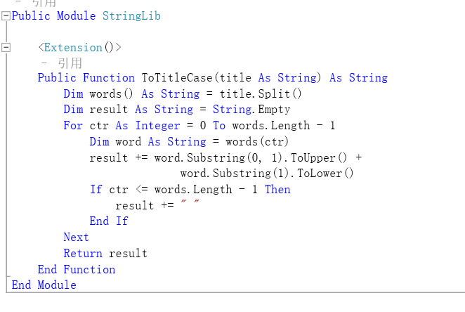
在C#项目中，可以像自身代码一样正常使用来自vb这个dll的扩展方法。
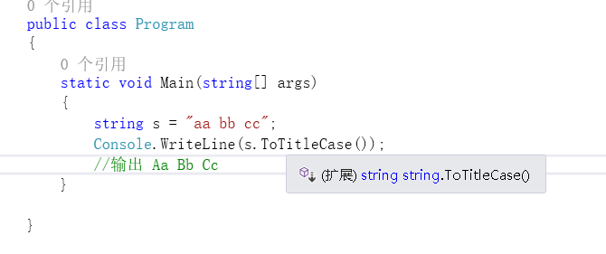
现在有那么多面向对象语言，但不是所有编程语言都能这样直接互操作使用，而.NET平台支持的C#和VB之所以能这样无缝衔接，先读而后知，后文将会介绍缘由。不过虽然.NET平台提供了这样一个互操作的特性，但终究语言是不一样的，每个语言有其特色和差异处，在相互操作的时候就会难免遇到一些例外情况。
比如我在C#中定义了一个基类，类里面包含一个公开的指针类型的成员，我想在vb中继承这个类，并访问这个公开的成员。
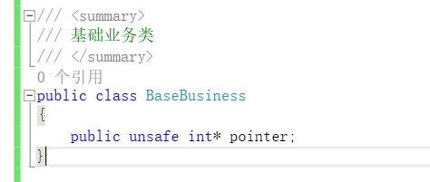
{kind=link}
{kind=link}
{kind=link}
{kind=link}
但是vb语言因为其定位不需要指针，所以并没有C#中如int*这样的指针类型，所以在vb中访问一个该语言不支持的类型会报错的，会提示：字段的类型不受支持。
再比如，C#语言中，对类名是区分大小写的，我在C#中定义了两个类，一个叫BaseBusiness，另一个叫baseBusiness。我在vb中去继承这个BaseBusiness类。
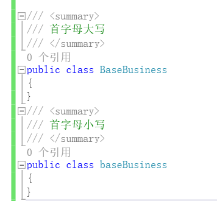
{kind=link}
{kind=link}
如图，在vb中访问这个类会报错的，报:”BaseBusiness”不明确，这是因为在vb中对类名是不区分大小写的。在vb中，它认为它同时访问了两个一模一样的类，所以按照vb的规则这是不合理的。那么为了在vb调用c#的程序集中避免这些因语言的差异性而导致的错误，在编写c#代码的时候 就应该提前知道vb中的这些规则，来应付式的开发。
但是，如果我想不仅仅局限于C#和VB，我还想我编写的代码在.Net平台上通用的话，那么我还必须得知道.NET平台支持的每一种语言和我编写代码所使用的语言的差异，从而在编写代码中避免这些。
这几年编程语言层出不穷，在将来.NET可能还会支持更多的语言，如果说对一个开发者而言掌握所有语言的差异处这是不现实的，所以.NET专门为此参考每种语言并找出了语言间的共性，然后定义了一组规则，开发者都遵守这个规则来编码，那么代码就能被任意.NET平台支持的语言所通用。
而与其说是规则，不如说它是一组语言互操作的标准规范，它就是公共语言规范 - Common Language Specification ,简称CLS
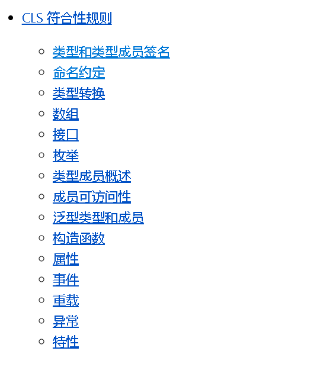
CLS从类型、命名、事件、属性、数组等方面对语言进行了共性的定义及规范。这些东西被提交给欧洲计算机制造联合会ECMA，称为：共同语言基础设施。
就以类型而言，CLS定义了在C#语言中符合规范的类型和不符合的有：
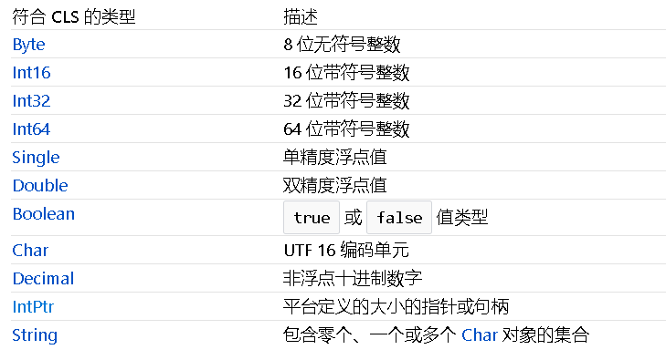
{kind=link}
{kind=link}
{kind=link}
当然，就编码角度而言，我们不是必须要看那些详略的文档。为了方便开发者开发，.NET提供了一个特性，名叫：CLSCompliantAttribute，代码被CLSCompliantAttribute标记后，如果你写的代码不符合CLS规范的话，编译器就会给你一条警告。
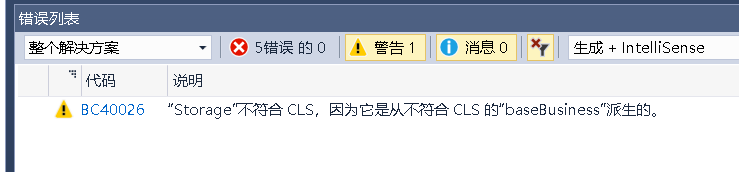
值得一提的是，CLS规则只是面向那些公开可被其它程序集访问的成员，如public、继承的protected，对于该程序集的内部成员如private、internal则不会执行该检测规则。也就是说，所适应的CLS遵从性规则，仅是那些公开的成员，而非私有实现。
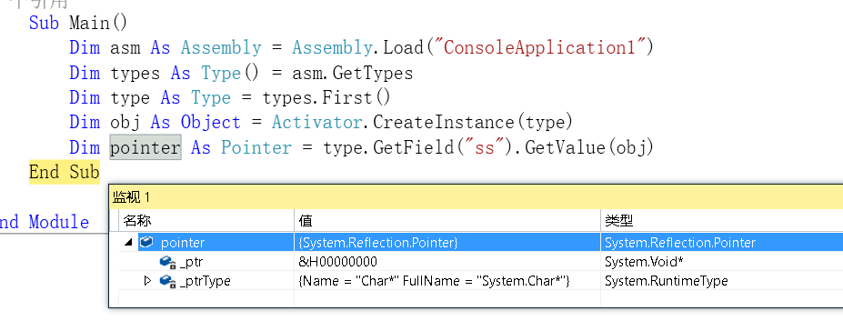
那么有没有那种特殊情况，比如我通过反射技术来访问该程序集中，当前语言并不拥有的类型时会发生什么情况呢？
答案是可以尝试的，如用vb反射访问c#中的char*指针类型，即使vb中没有char*这种等价的指针类型，但mscorlib提供了针对指针类型的 Pointer 包装类供其访问，可以从运行时类携带的类型名称看到其原本的类型名。
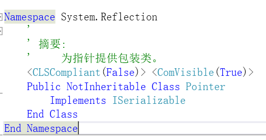
可以看到，该类中的元素是不符合CLS规范的。
{kind=link}
{kind=link}
{kind=link}
CLS异常
提到特殊情况，还要说的一点就是异常处理。.NET框架组成中定义了异常类型系统，在编译器角度，所有catch捕获的异常都必须继承自System.Exception，如果你要调用一个 由不遵循此规范的语言 抛出其它类型的异常对象(C++允许抛出任何类型的异常，如C#调用C++代码，C++抛出一个string类型的异常)，在C#2.0之前Catch(Exception)是捕捉不了的，但之后的版本可以。
在后续版本中，微软提供了System.Runtime.CompilerServices.RuntimeWrappedException异常类，将那些不符合CLS的包含Exception的对象封装起来。并且可以通过RuntimeCompatibilityAttribute特性来过滤这些异常。
RuntimeWrappedException ：https://docs.microsoft.com/zh-cn/dotnet/api/system.runtime.compilerservices.runtimewrappedexception?view=netframework-4.7.2
那么，这个段落总结一下，什么是CLS呢？
在面向.NET开发中，编写跨语言组件时所遵循的那些共性，那些规范就叫做 Common Langrage Specification简称 CLS，公共语言规范
官方CLS介绍：https://docs.microsoft.com/zh-cn/dotnet/standard/language-independence-and-language-independent-components
什么是CTS？
如果理解了什么是CLS的话，那么你将很轻松理解什么是CTS。
假设你已经围绕着封装 继承 多态 这3个特性设计出了多款面向对象的语言，你发现大家都是面向对象，都能很好的将现实中的对象模型表达出来。除了语法和功能擅长不同，语言的定义和设计结构其实都差不多一回事。
比如，现实中你看到了一辆小汽车，这辆车里坐着两个人，那么如何用这门语言来表达这样的一个概念和场面？
首先要为这门语言横向定义一个“类型”的概念。接下来在程序中就可以这样表示：有一个汽车类型，有一个人类型，在一个汽车类型的对象内包含着两个人类型的对象，因为要表达出这个模型，你又引入了“对象”的概念 。而现在，你又看到，汽车里面的人做出了开车的这样一个动作，由此你又引入了“动作指令”这样一个概念。
接着，你又恍然大悟总结出一个定理，无论是什么样的“类型”，都只会存在这样一个特征，即活着的 带生命特征的(如人) 和 死的 没有生命特征的(如汽车) 这两者中的一个。最后，随着思想模型的成熟，你发现，这个“类型”就相当于一个富有主体特征的一组指令的集合。
好，然后你开始照葫芦画瓢。你参考其它程序语言，你发现大家都是用class来表示类的含义，用struct表示结构的含义，用new来表示 新建一个对象的含义，于是，你对这部分功能的语法也使用class和new关键字来表示。然后你又发现，他们还用很多关键字来更丰富的表示这些现实模型，比如override、virtual等。于是，在不断的思想升级和借鉴后，你对这个设计语言过程中思想的变化仔细分析，对这套语言体系给抽象归纳，最终总结出一套体系。
于是你对其它人这样说，我总结出了一门语言很多必要的东西如两种主要类别：值类别和引用类别，五个主要类型：类、接口、委托、结构、枚举，我还规定了，一个类型可以包含字段、属性、方法、事件等成员，我还指定了每种类型的可见性规则和类型成员的访问规则，等等等等，只要按照我这个体系来设计语言，设计出来的语言它能够拥有很多不错的特性，比如跨语言，跨平台等，C#和VB.net之所以能够这样就是因为这两门语言的设计符合我这个体系。
那么，什么是CTS呢？
当你需要设计面向.Net的语言时所需要遵循一个体系(.Net平台下的语言都支持的一个体系)这个体系就是CTS（Common Type System 公共类型系统），它包括但不限于：
- 建立用于跨语言执行的框架。
- 提供面向对象的模型，支持在 .NET 实现上实现各种语言。
- 定义处理类型时所有语言都必须遵守的一组规则(CLS)。
- 提供包含应用程序开发中使用的基本基元数据类型（如
Boolean、Byte、Char等）的库。
上文的CLS是CTS（Common Type System 公共类型系统）这个体系中的子集。
一个编程语言，如果它能够支持CTS，那么我们就称它为面向.NET平台的语言。
官方CTS介绍： https://docs.microsoft.com/zh-cn/dotnet/standard/common-type-system
微软已经将CTS和.NET的一些其它组件，提交给ECMA以成为公开的标准，最后形成的标准称为CLI（Common Language Infrastructure）公共语言基础结构。
所以有的时候你见到的书籍或文章有的只提起CTS，有的只提起CLI，请不要奇怪，你可以宽泛的把他们理解成一个意思，CLI是微软将CTS等内容提交给国际组织计算机制造联合会ECMA的一个工业标准。
什么是类库？
在CTS中有一条就是要求基元数据类型的类库。我们先搞清什么是类库？类库就是类的逻辑集合，你开发工作中你用过或自己编写过很多工具类，比如搞Web的经常要用到的 JsonHelper、XmlHelper、HttpHelper 等等，这些类通常都会在命名为Tool、Utility等这样的项目中。 像这些类的集合我们可以在逻辑上称之为 “类库”，比如这些Helper我们统称为工具类库。
什么是基础类库BCL？
当你通过VS创建一个项目后，你这个项目就已经引用好了通过.NET下的语言编写好的一些类库。比如控制台中你直接就可以用Console类来输出信息，或者using System.IO 即可通过File类对文件进行读取或写入操作，这些类都是微软帮你写好的，不用你自己去编写，它帮你编写了一个面向.NET的开发语言中使用的基本的功能，这部分类，我们称之为BCL（Base Class Library）， 基础类库，它们大多都包含在System命名空间下。
基础类库BCL包含：基本数据类型，文件操作，集合，自定义属性，格式设置，安全属性，I/O流，字符串操作，事件日志等的类型
什么是框架类库FCL？
有关BCL的就不在此一一类举。.NET之大，发展至今，由微软帮助开发人员编写的类库越来越多，这让我们开发人员开发更加容易。由微软开发的类库统称为：FCL，Framework Class Library ，.NET框架类库，我上述所表达的BCL就是FCL中的一个基础部分，FCL中大部分类都是通过C#来编写的。
在FCL中，除了最基础的那部分BCL之外，还包含我们常见的 如 ： 用于网站开发技术的 ASP.NET类库，该子类包含webform/webpage/mvc，用于桌面开发的 WPF类库、WinForm类库，用于通信交互的WCF、asp.net web api、Web Service类库等等
什么是基元类型？
像上文在CTS中提到了 基本基元数据类型，大家知道，每门语言都会定义一些基础的类型，比如C#通过 int 来定义整型，用 string 来定义 字符串 ，用 object 来定义 根类。当我们来描述这样一个类型的对象时可以有这两种写法，如图：
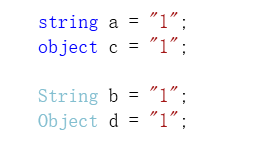
我们可以看到，上边用首字母小写的蓝色体string、object能描述，用首字母大写的浅蓝色String、Object也能描述,这两种表述方式有何不同？
要知道，在vs默认的颜色方案中，蓝色体 代表关键字，浅蓝色体 代表类型。
那么这样也就意味着，由微软提供的FCL类库里面 包含了 一些用于描述数据类型的 基础类型，无论我们使用的是什么语言，只要引用了FCL，我们都可以通过new一个类的方式来表达数据类型。
如图：
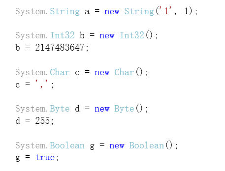
用new来创建这些类型的对象，但这样就太繁琐，所以C#就用 int 关键字来表示System.Int32，用 string 关键字来表示 System.String 等，所以我们才能这样去写。
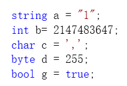
像这样被表述于编译器直接支持的类型叫做基元类型，它被直接映射于BCL中具体的类。
下面是部分面向.NET的语言的基元类型与对应的BCL的类别图：
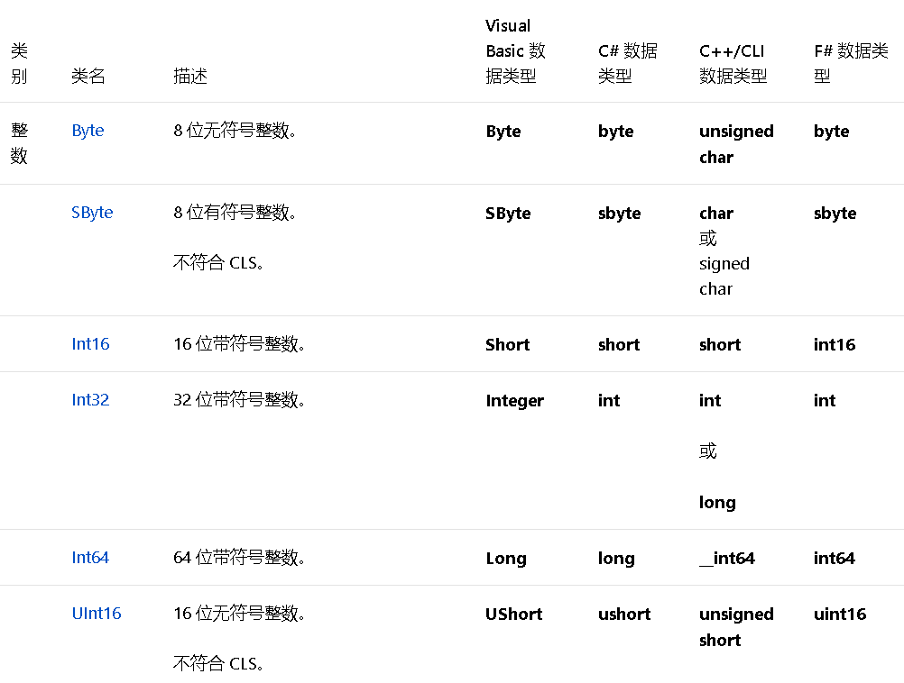
{kind=link}
{kind=link}
{kind=link}
{kind=link}
System.Object的意义
说起类型，这里要说CTS定义的一个非常重要的规则，就是类与类之间只能单继承，System.Object类是所有类型的根，任何类都是显式或隐式的继承于System.Object。
System.Object定义了类型的最基本的行为：用于实例比较的Equals系列方法、用于Hash表中Hash码的GetHashCode、用于Clr运行时获取的类型信息GetType、用于表示当前对象字符串的ToString、用于执行实例的浅复制MemberwiseClone、用于GC回收前操作的析构方法Finalize 这6类方法。
所以 Object不仅是C#语言的类型根、还是VB等所有面向.NET的语言的类型根，它是整个FCL的类型根。
当然，CTS定义了单继承，很多编程语言都满足这个规则，但也有语言是例外，如C++就不做继承限制，可以继承多个，C++/CLI作为C++在对.NET的CLI实现，如果在非托管编码中多继承那也可以，如果试图在托管代码中多继承，那就会报错。我前面已经举过这样特殊情况的例子，这也在另一方面反映出，各语言对CTS的支持并不是都如C#那样全面的，我们只需明记一点：对于符合CTS的那部分自然就按照CTS定义的规则来。 任何可遵循CTS的类型规范，同时又有.NET运行时的实现的编程语言就可以成为.NET中的一员。
计算机是如何运行程序的？
接下来我要说什么是.NET的跨平台，并解释为什么能够跨语言。不过要想知道什么是跨平台，首先你得知道一个程序是如何在本机上运行的。
什么是CPU
CPU,全称Central Processing Unit,叫做中央处理器,它是一块超大规模的集成电路，是计算机组成上必不可少的组成硬件，没了它，计算机就是个壳。
无论你编程水平怎样，你都应该先知道，CPU是一台计算机的运算核心和控制核心，CPU从存储器或高速缓冲存储器中取出指令，放入指令寄存器，并对指令译码，执行指令。
我们运行一个程序，CPU就会不断的读取程序中的指令并执行，直到关闭程序。事实上，从电脑开机开始，CPU就一直在不断的执行指令直到电脑关机。
什么是高级编程语言
在计算机角度，每一种CPU类型都有自己可以识别的一套指令集，计算机不管你这个程序是用什么语言来编写的，其最终只认其CPU能够识别的二进制指令集。
在早期计算机刚发展的时代，人们都是直接输入01010101这样的没有语义的二进制指令来让计算机工作的，可读性几乎没有，没人愿意直接编写那些没有可读性、繁琐、费时，易出差错的二进制01代码，所以后来才出现了编程语言。
编程语言的诞生，使得人们编写的代码有了可读性，有了语义，与直接用01相比，更有利于记忆。
而前面说了，计算机最终只识别二进制的指令，那么，我们用编程语言编写出来的代码就必须要转换成供机器识别的指令。
就像这样：
1 | code: 1+2 |
所以从一门编程语言所编写的代码文件转换成能让本机识别的指令，这中间是需要一个翻译的过程。
而我们现在计算机上是运载着操作系统的，光翻译成机器指令也不行，还得让代码文件转化成可供操作系统执行的程序才行。
那么这些步骤，就是编程语言所对应的编译环节的工程了。这个翻译过程是需要工具来完成，我们把它叫做 编译器。
不同厂商的CPU有着不同的指令集，为了克服面向CPU的指令集的难读、难编、难记和易出错的缺点，后来就出现了面向特定CPU的特定汇编语言， 比如我打上这样的x86汇编指令 mov ax,bx ，然后用上用机器码做的汇编器，它将会被翻译成 1000100111011000 这样的二进制01格式的机器指令。
不同CPU架构上的汇编语言指令不同，而为了统一一套写法，同时又不失汇编的表达能力，C语言就诞生了。
用C语言写的代码文件，会被C编译器先转换成对应平台的汇编指令，再转成机器码，最后将这些过程中产生的中间模块链接成一个可以被操作系统执行的程序。
那么汇编语言和C语言比较，我们就不需要去阅读特定CPU的汇编码，我只需要写通用的C源码就可以实现程序的编写，我们用将更偏机器实现的汇编语言称为低级语言，与汇编相比，C语言就称之为高级语言。
在看看我们C#，我们在编码的时候都不需要过于偏向特定平台的实现，翻译过程也基本遵循这个过程。它的编译模型和C语言类似，都是属于这种间接转换的中间步骤，故而能够跨平台。
所以就类似于C/C#等这样的高级语言来说是不区分平台的，而在于其背后支持的这个 翻译原理 是否能支持其它平台。
什么是托管代码，托管语言，托管模块？
作为一门年轻的语言，C#借鉴了许多语言的长处，与C比较，C#则更为高级。
往往一段简小的C#代码，其功能却相当于C的一大段代码，并且用C#语言你几乎不需要指针的使用，这也就意味着你几乎不需要进行人为的内存管控与安全考虑因素，也不需要多懂一些操作系统的知识，这让编写程序变得更加轻松和快捷。
如果说C#一段代码可以完成其它低级语言一大段任务，那么我们可以说它特性丰富或者类库丰富。而用C#编程不需要人为内存管控是怎么做到的呢？
.NET提供了一个垃圾回收器(GC)来完成这部分工作，当你创建类型的时候，它会自动给你分配所需要的这部分内存空间。就相当于，有一个专门的软件或进程，它会读取你的代码，然后当你执行这行代码的时候，它帮你做了内存分配工作。 这部分本该你做的工作，它帮你做了，这就是“托管”的概念。比如现实中 托管店铺、托管教育等这样的别人替你完成的概念。
因此，C#被称之为托管语言。C#编写的代码也就称之为托管代码,C#生成的模块称之为托管模块等。(对于托管的资源，是不需要也无法我们人工去干预的，但我们可以了解它的一些机制原理，在后文我会简单介绍。)
只要有比较，就会产生概念。那么在C#角度，那些脱离了.NET提供的诸如垃圾回收器这样的环境管制，就是对应的 非托管了。
非托管的异常
我们编写的程序有的模块是由托管代码编写，有的模块则调用了非托管代码。在.NET Framework中也有一套基于此操作系统SEH的异常机制，理想的机制设定下我们可以直接通过catch(e)或catch来捕获指定的异常和框架设计人员允许我们捕获的异常。
而异常类型的级别也有大有小，有小到可以直接框架本身或用代码处理的，有大到需要操作系统的异常机制来处理。.NET会对那些能让程序崩溃的异常类型给进行标记，对于这部分异常，在.NET Framework 4.0之前允许开发人员在代码中自己去处理，但4.0版本之后有所变更，这些被标记的异常默认不会在托管环境中抛出(即无法catch到)，而是由操作系统的SEH机制去处理。
不过如果你仍然想在代码中捕获处理这样的异常也是可以的，你可以对需要捕获的方法上标记[System.Runtime.ExceptionServices.HandleProcessCorruptedStateExceptionsAttribute]特性，就可以在该方法内通过catch捕获到该类型的异常。你也可以通过在配置文件中添加运行时节点来对全局进行这样的一个配置：
1 | <runtime> |
HandleProcessCorruptedStateExceptions特性：https://msdn.microsoft.com/zh-cn/library/azure/system.runtime.exceptionservices.handleprocesscorruptedstateexceptionsattribute.aspx
SEHException类：https://msdn.microsoft.com/en-us/library/system.runtime.interopservices.sehexception(v=vs.100).aspx
处理损坏状态异常博客专栏： https://msdn.microsoft.com/zh-cn/magazine/dd419661.aspx
什么是CLR，.NET虚拟机？
实际上，.NET不仅提供了自动内存管理的支持，他还提供了一些列的如类型安全、应用程序域、异常机制等支持，这些 都被统称为CLR公共语言运行库。
CLR是.NET类型系统的基础，所有的.NET技术都是建立在此之上，熟悉它可以帮助我们更好的理解框架组件的核心、原理。
在我们执行托管代码之前，总会先运行这些运行库代码，通过运行库的代码调用，从而构成了一个用来支持托管程序的运行环境，进而完成诸如不需要开发人员手动管理内存，一套代码即可在各大平台跑的这样的操作。
这套环境及体系之完善，以至于就像一个小型的系统一样，所以通常形象的称CLR为”.NET虚拟机”。那么，如果以进程为最低端，进程的上面就是.NET虚拟机(CLR)，而虚拟机的上面才是我们的托管代码。换句话说，托管程序实际上是寄宿于.NET虚拟机中。
什么是CLR宿主进程，运行时主机？
那么相对应的，容纳.NET虚拟机的进程就是CLR宿主进程了，该程序称之为运行时主机。
这些运行库的代码，全是由C/C++编写，具体表现为以 mscoree.dll 为代表的核心dll文件，该dll提供了N多函数用来构建一个CLR环境 ，最后当运行时环境构建完毕(一些函数执行完毕)后，调用_CorDllMain或_CorExeMain来查找并执行托管程序的入口方法(如控制台就是Main方法)。
如果你足够熟悉CLR，那么你完全可以在一个非托管程序中通过调用运行库函数来定制CLR并执行托管代码。
像SqlServer就集成了CLR，可以使用任何 .NET Framework 语言编写存储过程、触发器、用户定义类型、用户定义函数（标量函数和表值函数）以及用户定义的聚合函数。
有关CLR大纲介绍： https://msdn.microsoft.com/zh-cn/library/9x0wh2z3(v=vs.85).aspx
CLR集成： https://docs.microsoft.com/zh-cn/previous-versions/sql/sql-server-2008/ms131052(v%3dsql.100)
构造CLR的接口：https://msdn.microsoft.com/zh-cn/library/ms231039(v=vs.85).aspx
适用于 .NET Framework 2.0 的宿主接口：https://msdn.microsoft.com/zh-cn/library/ms164336(v=vs.85).aspx
选择CLR版本： https://docs.microsoft.com/en-us/dotnet/framework/configure-apps/file-schema/startup/supportedruntime-element
所以C#编写的程序如果想运行就必须要依靠.NET提供的CLR环境来支持。 而CLR是.NET技术框架中的一部分，故只要在Windows系统中安装.NET Framework即可。
Windows系统自带.NET Framework
Windows系统默认安装的有.NET Framework，并且可以安装多个.NET Framework版本，你也不需要因此卸载，因为你使用的应用程序可能依赖于特定版本，如果你移除该版本，则应用程序可能会中断。
Microsoft .NET Framework百度百科下有windows系统默认安装的.NET版本
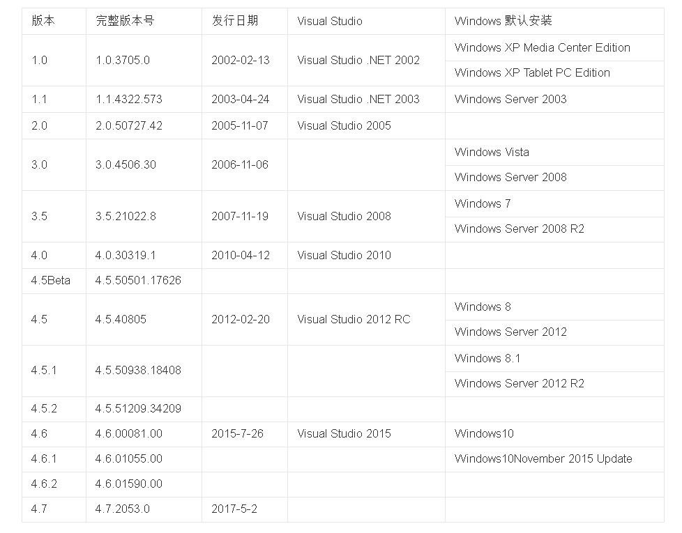
图出自 https://baike.baidu.com/item/Microsoft%20.NET%20Framework/9926417?fr=aladdin
{kind=link}
.NET Framework 4.0.30319
在%SystemRoot%\Microsoft.NET下的Framework和Framework64文件夹中分别可以看到32位和64位的.NET Framework安装的版本。
我们点进去可以看到以.NET版本号为命名的文件夹，有2.0,3.0,3.5,4.0这几个文件夹。
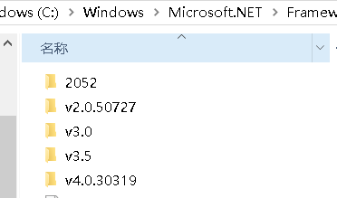
{kind=link}
.NET Framework4.X覆盖更新
要知道.NET Framework版本目前已经迭代到4.7系列，电脑上明明安装了比4.0更高版本的.NET Framework，然而从文件夹上来看，最高不过4.0，这是为何？
原来自.NET Framework 4以来的所有.NET Framework版本都是直接在v4.0.30319文件夹上覆盖更新，并且无法安装以前的4.x系列的老版本，所以v4.0.30319这个目录中其实放的是你最后一次更新的NET Framework版本。
.NET Framework覆盖更新：https://docs.microsoft.com/en-us/dotnet/framework/install/guide-for-developers
如何确认本机安装了哪些.NET Framework和对应CLR的版本？
我们可以通过注册表等其它方式来查看安装的最新版本：https://docs.microsoft.com/zh-cn/dotnet/framework/migration-guide/how-to-determine-which-versions-are-installed 。
不过如果不想那么复杂的话，还有种最直接简单的：
那就是进入该目录文件夹，随便找到几个文件对其右键，然后点击详细信息即可查看到对应的文件版本，可以依据文件版本估摸出.NET Framework版本，比如csc.exe文件。
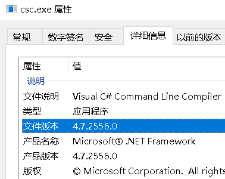
{kind=link}
什么是程序集
上文我介绍了编译器，即将源代码文件给翻译成一个计算机可识别的二进制程序。而在.NET Framework目录文件夹中就附带的有 用于C#语言的命令行形式的编译器csc.exe 和 用于VB语言的命令行形式的编译器vbc.exe。
我们通过编译器可以将后缀为.cs(C#)和.vb(VB)类型的文件编译成程序集。
程序集是一个抽象的概念，不同的编译选项会产生不同形式的程序集。以文件个数来区分的话，那么就分 单文件程序集(即一个文件)和多文件程序集(多个文件)。
而不论是单文件程序集还是多文件程序集，其总有一个核心文件，就是表现为后缀为.dll或.exe格式的文件。它们都是标准的PE格式的文件，主要由4部分构成：
- PE头，即Windows系统上的可移植可执行文件的标准格式
- CLR头，它是托管模块特有的，它主要包括
- 程序入口方法
- CLR版本号等一些标志
- 一个可选的强名称数字签名
- 元数据表，主要用来记录了在源代码中定义和引用的所有的类型成员(如方法、字段、属性、参数、事件…)的位置和其标志Flag(各种修饰符)
正是因为元数据表的存在，VS才能智能提示，反射才能获取MemberInfo，CLR扫描元数据表即可获得该程序集的相关重要信息，所以元数据表使得程序集拥有了自我描述的这一特性。clr2中，元数据表大概40多个，其核心按照用途分为3类：- 即用于记录在源代码中所定义的类型的定义表：ModuleDef、TypeDef、MethodDef、ParamDef、FieldDef、PropertyDef、EventDef，
- 引用了其它程序集中的类型成员的引用表：MemberRef、AssemblyRef、ModuleRef、TypeRef
- 用于描述一些杂项(如版本、发布者、语言文化、多文件程序集中的一些资源文件等)的清单表：AssemblyDef、FileDef、ManifestResourceDef、ExportedTypeDef
- IL代码(也称MSIL，后来被改名为CIL：Common Intermediate Language通用中间语言)，是介于源代码和本机机器指令中间的代码，将通过CLR在不同的平台产生不同的二进制机器码。
- 一些资源文件
多文件程序集的诞生场景有：比如我想为.exe绑定资源文件(如Icon图标)，或者我想按照功能以增量的方式来按需编译成.dll文件。 通常很少情况下才会将源代码编译成多文件程序集，并且在VS IDE中总是将源代码给编译成单文件的程序集(要么是.dll或.exe)，所以接下来我就以单文件程序集为例来讲解。
用csc.exe进行编译
现在，我将演示一段文本是如何被csc.exe编译成一个可执行的控制台程序的。
我们新建个记事本，然后将下面代码复制上去。
1 | using System; |
然后关闭记事本，将之.txt的后缀改为.cs的后缀(后缀是用来标示这个文件是什么类型的文件，并不影响文件的内容)。
上述代码相当于Web中的http.sys伪实现，是建立了通信的socket服务端，并通过while循环来不断的监视获取包的数据实现最基本的监听功能，最终我们将通过csc.exe将该文本文件编译成一个控制台程序。
我已经在前面讲过BCL，基础类库。在这部分代码中，为了完成我想要的功能，我用到了微软已经帮我们实现好了的String数据类型系列类(.NET下的一些数据类型)、Environment类(提供有关当前环境和平台的信息以及操作它们的方法)、Console类(用于控制台输入输出等)、Socket系列类(对tcp协议抽象的接口)、File文件系列类(对文件目录等操作系统资源的一些操作)、Encoding类(字符流的编码)等
这些类，都属于BCL中的一部分，它们存在但不限于mscorlib.dll、System.dll、System.core.dll、System.Data.dll等这些程序集中。
附：不要纠结BCL到底存在于哪些dll中，总之，它是个物理分散，逻辑上的类库总称。
mscorlib.dll和System.dll的区别：https://stackoverflow.com/questions/402582/mscorlib-dll-system-dll
因为我用了这些类，那么按照编程规则我必须在代码中using这些类的命名空间，并通过csc.exe中的 /r:dll路径 命令来为生成的程序集注册元数据表(即以AssemblyRef为代表的程序集引用表)。
而这些代码引用了4个命名空间，但实际上它们只被包含在mscorlib.dll和System.dll中，那么我只需要在编译的时候注册这两个dll的信息就行了。
好，接下来我将通过cmd运行csc.exe编译器，再输入编译命令： csc /out:D:\demo.exe D:\dic\demo.cs /r:D:\dic\System.dll
/r：是将引用dll中的类型数据注册到程序集中的元数据表中。/out:是输出文件的意思，如果没有该命令则默认输出{name}.exe。
使用csc.exe编译生成： https://docs.microsoft.com/zh-cn/dotnet/csharp/language-reference/compiler-options/command-line-building-with-csc-exe
csc编译命令行介绍：https://www.cnblogs.com/shuang121/archive/2012/12/24/2830874.html
总之，你除了要掌握基本的编译指令外，当你打上这行命令并按回车后，必须满足几个条件，1.是.cs后缀的c#格式文件，2.是 代码语法等检测分析必须正确，3.是 使用的类库必须有出处(引用的dll)，当然 因为我是编译为控制台程序，所以还必须得有个静态Main方法入口，以上缺一不可。
可以看出，这段命令我是将 位于D:\dic\的demo.cs文件给编译成 位于D:\名为demo.exe的控制台文件，并且因为在代码中使用到了System.dll，所以还需要通过/r注册该元数据表。
这里得注意为什么没有/r:mscorlib.dll,因为mscorlib.dll地位的特殊，所以csc总是对每个程序集进行mscorlib.dll的注册(自包含引用该dll),因此我们可以不用/r:mscorlib.dll这个引用命令，但为了演示效果我还是决定通过/nostdlib命令来禁止csc默认导入mscorlib.dll文件。
所以，最终命令是这样的： csc D:\dic\demo.cs /r:D:\dic\mscorlib.dll /r:D:\dic\System.dll /nostdlib
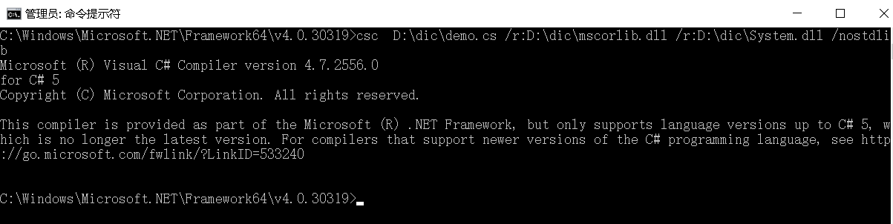
因为没有指定输出文件/out选项， 所以会默认输出在与csc同一目录下名为demo.exe的文件。事实上，在csc的命令中，如果你没有指定路径，那么就默认采用在csc.exe的所在目录的相对路径。
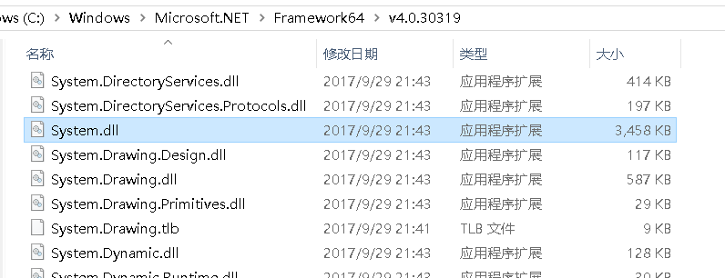
而我们可以看到，在该目录下有许多程序集，其中就包含我们需要的System.dll和mscorlib.dll，所以我们完全可以直接/r:mscorlib.dll /r:System.dll
而类似于System.dll、System.Data.dll这样使用非常频繁的程序集，我们其实不用每次编译的时候都去手动/r一下，对于需要重复劳动的编译指令，我们可以将其放在后缀为.rsp的指令文件中，然后在编译时直接调用文件即可执行里面的命令 @ {name}.rsp。
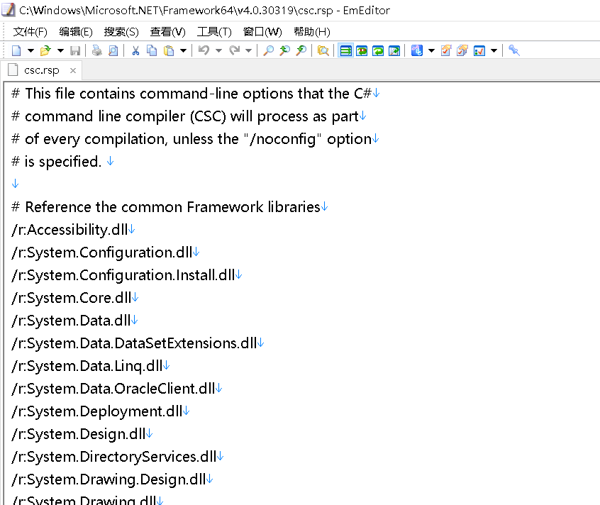
csc.exe默认包含csc.rsp文件,我们可以用/noconfig来禁止默认包含，而csc.rsp里面已经写好了我们会经常用到的指令。
所以，最终我可以这样写 csc D:\dic\demo.cs 直接生成控制台应用程序。
{kind=link}
{kind=link}
{kind=link}
{kind=link}
.NET程序执行原理
好的，现在我们已经有了一个demo.exe的可执行程序，它是如何被我们运行的？
C#源码被编译成程序集，程序集内主要是由一些元数据表和IL代码构成，我们双击执行该exe，Windows加载器将该exe(PE格式文件)给映射到虚拟内存中，程序集的相关信息都会被加载至内存中，并查看PE文件的入口点 (EntryPoint)并跳转至指定的mscoree.dll中的_CorExeMain函数，该函数会执行一系列相关dll来构造CLR环境，当CLR预热后调用该程序集的入口方法Main()，接下来由CLR来执行托管代码(IL代码)。
JIT编译
前面说了，计算机最终只识别二进制的机器码，在CLR下有一个用来将IL代码转换成机器码的引擎，称为Just In Time Compiler，简称JIT，CLR总是先将IL代码按需通过该引擎编译成机器指令再让CPU执行，在这期间CLR会验证代码和元数据是否类型安全(在对象上只调用正确定义的操作、标识与声称的要求一致、对类型的引用严格符合所引用的类型)，被编译过的代码无需JIT再次编译，而被编译好的机器指令是被存在内存当中，当程序关闭后再打开仍要重新JIT编译。
AOT编译
CLR的内嵌编译器是即时性的，这样的一个很明显的好处就是可以根据当时本机情况生成更有利于本机的优化代码，但同样的，每次在对代码编译时都需要一个预热的操作，它需要一个运行时环境来支持，这之间还是有消耗的。
而与即时编译所对应的，就是提前编译了，英文为Ahead of Time Compilation，简称AOT，也称之为静态编译。
在.NET中，使用Ngen.exe或者开源的.NET Native可以提前将代码编译成本机指令。
Ngen是将IL代码提前给全部编译成本机代码并安装在本机的本机映像缓存中，故而可以减少程序因JIT预热的时间，但同样的也会有很多注意事项，比如因JIT的丧失而带来的一些特性就没有了，如类型验证。Ngen仅是尽可能代码提前编译，程序的运行仍需要完整的CLR来支持。
.NET Native在将IL转换为本机代码的时候，会尝试消除所有元数据将依靠反射和元数据的代码替换为静态本机代码，并且将完整的CLR替换为主要包含垃圾回收器的重构运行时mrt100_app.dll。
.NET Native: https://docs.microsoft.com/zh-cn/dotnet/framework/net-native/
Ngen.exe：https://docs.microsoft.com/zh-cn/dotnet/framework/tools/ngen-exe-native-image-generator
Ngen与.NET Native比较：https://www.zhihu.com/question/27997478/answer/38978762
现在，我们可以通过ILDASM工具(一款查看程序集IL代码的软件，在Microsoft SDKs目录中的子目录中)来查看该程序集的元数据表和Main方法中间码。
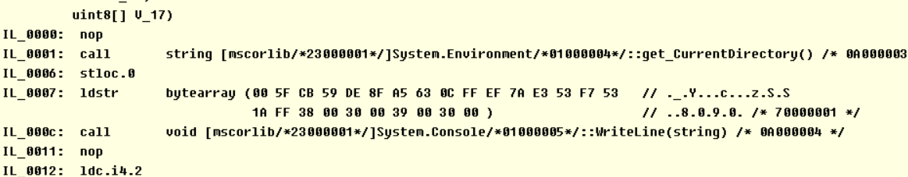
c#源码第一行代码：string rootDirectory = Environment.CurrentDirectory;被翻译成IL代码： call string [mscorlib/*23000001*/]System.Environment/*01000004*/::get_CurrentDirectory() /* 0A000003 */
这句话意思是调用 System.Environment类的get_CurrentDirectory()方法(属性会被编译为一个私有字段+对应get/set方法)。
点击视图=>元信息=>显示，即可查看该程序集的元数据。
我们可以看到System.Environment标记值为01000004，在TypeRef类型引用表中找到该项:
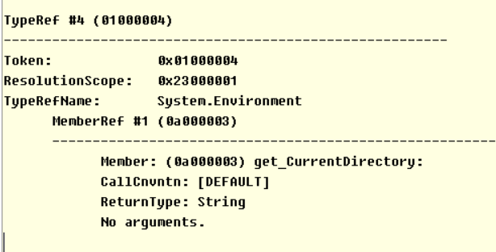
注意图，TypeRefName下面有该类型中被引用的成员，其标记值为0A000003，也就是get_CurrentDirectory了。
而从其ResolutionScope指向位于0x23000001而得之，该类型存在于mscorlib程序集。
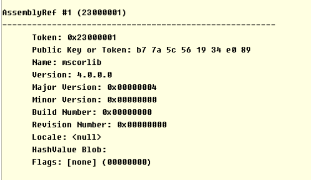
于是我们打开mscorlib.dll的元数据清单，可以在类型定义表(TypeDef)找到System.Environment,可以从元数据得知该类型的一些标志(Flags,常见的public、sealed、class、abstract)，也得知继承(Extends)于System.Object。在该类型定义下还有类型的相关信息，我们可以在其中找到get_CurrentDirectory方法。 我们可以得到该方法的相关信息，这其中表明了该方法位于0x0002b784这个相对虚地址(RVA)，接着JIT在新地址处理CIL，周而复始。
元数据在运行时的作用： https://docs.microsoft.com/zh-cn/dotnet/standard/metadata-and-self-describing-components#run-time-use-of-metadata
{kind=link}
{kind=link}
{kind=link}
程序集的规则
上文我通过ILDASM来描述CLR执行代码的方式，但还不够具体，还需要补充的是对于程序集的搜索方式。
对于System.Environment类型，它存在于mscorlib.dll程序集中，demo.exe是个独立的个体，它通过csc编译的时候只是注册了引用mscorlib.dll中的类型的引用信息，并没有记录mscorlib.dll在磁盘上的位置，那么，CLR怎么知道get_CurrentDirectory的代码？它是从何处读取mscorlib.dll的？
对于这个问题，.NET有个专门的概念定义，我们称为 程序集的加载方式。
程序集的加载方式
对于自身程序集内定义的类型，我们可以直接从自身程序集中的元数据中获取，对于在其它程序集中定义的类型，CLR会通过一组规则来在磁盘中找到该程序集并加载在内存。
CLR在查找引用的程序集的位置时候，第一个判断条件是 判断该程序集是否被签名。
什么是签名？
强名称程序集
就比如大家都叫张三，姓名都一样，喊一声张三不知道到底在叫谁。这时候我们就必须扩展一下这个名字以让它具有唯一性。
我们可以通过sn.exe或VS对项目右键属性在签名选项卡中采取RSA算法对程序集进行数字签名（加密：公钥加密，私钥解密。签名：私钥签名，公钥验证签名），会将构成程序集的所有文件通过哈希算法生成哈希值，然后通过非对称加密算法用私钥签名，最后公布公钥生成一串token，最终将生成一个由程序集名称、版本号、语言文化、公钥组成的唯一标识，它相当于一个强化的名称，即强名称程序集。
mscorlib, Version=4.0.0.0, Culture=neutral, PublicKeyToken=b77a5c561934e089
我们日常在VS中的项目默认都没有被签名，所以就是弱名称程序集。强名称程序集是具有唯一标识性的程序集，并且可以通过对比哈希值来比较程序集是否被篡改，不过仍然有很多手段和软件可以去掉程序集的签名。
需要值得注意的一点是：当你试图在已生成好的强名称程序集中引用弱名称程序集，那么你必须对弱名称程序集进行签名并在强名称程序集中重新注册。
之所以这样是因为一个程序集是否被篡改还要考虑到该程序集所引用的那些程序集，根据CLR搜索程序集的规则(下文会介绍)，没有被签名的程序集可以被随意替换，所以考虑到安全性，强名称程序集必须引用强名称程序集，否则就会报错：需要强名称程序集。
.NET Framework 4.5中对强签名的更改：https://docs.microsoft.com/zh-cn/dotnet/framework/app-domains/enhanced-strong-naming
程序集搜索规则
事实上，按照存储位置来说，程序集分为共享(全局)程序集和私有程序集。
CLR查找程序集的时候，会先判断该程序集是否被强签名，如果强签名了那么就会去共享程序集的存储位置(后文的GAC)去找，如果没找到或者该程序集没有被强签名，那么就从该程序集的同一目录下去寻找。
强名称程序集是先找到与程序集名称(VS中对项目右键属性应用程序->程序集名称)相等的文件名称，然后 按照唯一标识再来确认，确认后CLR加载程序集，同时会通过公钥效验该签名来验证程序集是否被篡改(如果想跳过验证可查阅https://docs.microsoft.com/zh-cn/dotnet/framework/app-domains/how-to-disable-the-strong-name-bypass-feature)，如果强名称程序集被篡改则报错。
而弱名称程序集则直接按照与程序集名称相等的文件名称来找，如果还是没有找到就以该程序集名称为目录的文件夹下去找。总之，如果最终结果就是没找到那就会报System.IO.FileNotFoundException异常，即尝试访问磁盘上不存在的文件失败时引发的异常。
注意：此处文件名称和程序集名称是两个概念，不要模棱两可，文件CLR头内嵌程序集名称。
举个例子：
我有一个控制台程序，其路径为D:\Demo\Debug\demo.exe，通过该程序的元数据得知，其引用了一个程序集名称为aa的普通程序集，引用了一个名为bb的强名称程序集，该bb.dll的强名称标识为：xx001。
现在CLR开始搜索程序集aa，首先它会从demo.exe控制台的同一目录（也就是D:\Demo\Debug\）中查找程序集aa，搜索文件名为aa.dll的文件，如果没找到就在该目录下以程序集名称为目录的目录中查找，也就是会查 D:\Demo\Debug\aa\aa.dll，这也找不到那就报错。
然后CLR开始搜索程序集bb，CLR从demo.exe的元数据中发现bb是强名称程序集，其标识为:xx001。于是CLR会先从一个被定义为GAC的目录中去通过标识找，没找到的话剩下的寻找步骤就和寻找aa一样完全一致了。
当然，你也可以通过配置文件config中(配置文件存在于应用程序的同一目录中)人为增加程序集搜索规则：
1.在运行时runtime节点中，添加privatePath属性来添加搜索目录，不过只能填写相对路径：
1 | <runtime> |
2.如果程序集是强签名后的，那么可以通过codeBase来指定网络路径或本地绝对路径。
1 | <runtime> |
当然，我们还可以在代码中通过AppDomain类中的几个成员来改变搜索规则，如AssemblyResolve事件、AppDomainSetup类等。
有关运行时节点的描述:https://docs.microsoft.com/zh-cn/dotnet/framework/configure-apps/file-schema/runtime/runtime-element
项目的依赖顺序
如果没有通过config或者在代码中来设定CLR搜索程序集的规则，那么CLR就按照默认的也就是我上述所说的模式来寻找。
所以如果我们通过csc.exe来编译项目，引用了其它程序集的话，通常需要将那些程序集复制到同一目录下。故而每当我们通过VS编译器对项目右键重新生成项目(重新编译)时，VS都会将引用的程序集给复制一份到项目bin\输出目录Debug文件夹下，我们可以通过VS中对引用的程序集右键属性-复制本地 True/Flase 来决定这一默认行为。
值得一提的是，项目间的生成是有序生成的，它取决于项目间的依赖顺序。
比如Web项目引用BLL项目，BLL项目引用了DAL项目。那么当我生成Web项目的时候，因为我要注册Bll程序集，所以我要先生成Bll程序集，而BLL程序集又引用了Dal，所以又要先生成Dal程序集，所以程序集生成顺序就是Dal=>BLL=>Web，项目越多编译的时间就越久。
程序集之间的依赖顺序决定了编译顺序，所以在设计项目间的分层划分时不仅要体现出层级职责，还要考虑到依赖顺序。代码存放在哪个项目要有讲究，不允许出现互相引用的情况，比如A项目中的代码引用B，B项目中的代码又引用A。
为什么Newtonsoft.Json版本不一致？
而除了注意编译顺序外，我们还要注意程序集间的版本问题，版本间的错乱会导致程序的异常。
举个经典的例子：Newtonsoft.Json的版本警告，大多数人都知道通过版本重定向来解决这个问题，但很少有人会琢磨为什么会出现这个问题，找了一圈文章，没找到一个解释的。
比如：
A程序集引用了 C盘:\Newtonsoft.Json 6.0程序集
B程序集引用了 从Nuget下载下来的Newtonsoft.Json 10.0程序集
此时A引用B，就会报：发现同一依赖程序集的不同版本间存在无法解决的冲突 这一警告。
1 | A：引用Newtonsoft.Json 6.0 |
A程序集中的Func方法调用了B程序集中的JsonObj方法，JsonObj方法又调用了Newtonsoft.Json 10.0程序集中的对象，那么当执行Func方法时程序就会异常，报System.IO.FileNotFoundException: 未能加载文件或程序集Newtonsoft.Json 10.0的错误。
这是为什么？
- 这是因为依赖顺序引起的。A引用了B，首先会先生成B，而B引用了 Newtonsoft.Json 10.0，那么VS就会将源引用文件(Newtonsoft.Json 10.0)复制到B程序集同一目录(bin/Debug)下，名为Newtonsoft.Json.dll文件，其内嵌程序集版本为10.0。
- 然后A引用了B，所以会将B程序集和B程序集的依赖项(Newtonsoft.Json.dll)给复制到A的程序集目录下，而A又引用了C盘的Newtonsoft.Json 6.0程序集文件，所以又将C:\Newtonsoft.Json.dll文件给复制到自己程序集目录下。因为两个Newtonsoft.Json.dll重名，所以直接覆盖了前者，那么只保留了Newtonsoft.Json 6.0。
- 当我们调用Func方法中的B.Convert()时候，CLR会搜索B程序集，找到后再调用 return Newtonsoft.Json.Obj 这行代码，而这行代码又用到了Newtonsoft.Json程序集，接下来CLR搜索Newtonsoft.Json.dll，文件名称满足，接下来CLR判断其标识，发现版本号是6.0，与B程序集清单里注册的10.0版本不符，故而才会报出异常：未能加载文件或程序集Newtonsoft.Json 10.0。
以上就是为何Newtonsoft.Json版本不一致会导致错误的原因，其也诠释了CLR搜索程序集的一个过程。
那么，如果我执意如此，有什么好的解决方法能让程序顺利执行呢？有，有2个方法。
第一种：通过bindingRedirect节点重定向，即当找到10.0的版本时，给定向到6.0版本
1 | <runtime> |
如何在编译时加载两个相同的程序集？
注意：我看过有的文章里写的一个AppDomain只能加载一个相同的程序集，很多人都以为不能同时加载2个不同版本的程序集，实际上CLR是可以同时加载Newtonsoft.Json 6.0和Newtonsoft.Json 10.0的。
第二种：对每个版本指定codeBase路径，然后分别放上不同版本的程序集，这样就可以加载两个相同的程序集。
1 | <runtime> |
如何同时调用两个相同命名空间和类型的程序集？
除了程序集版本不同外，还有一种情况就是，我一个项目同时引用了程序集A和程序集B，但程序集A和程序集B中的命名空间和类型名称完全一模一样，这个时候我调用任意一个类型都无法区分它是来自于哪个程序集的，那么这种情况我们可以使用extern alias外部别名。
我们需要在所有代码前定义别名，extern alias a;extern alias b;，然后在VS中对引用的程序集右键属性-别名，分别将其更改为a和b(或在csc中通过/r:{别名}={程序集}.dll)。
在代码中通过 {别名}::{命名空间}.{类型}的方式来使用。
extern-alias介绍： https://docs.microsoft.com/zh-cn/dotnet/csharp/language-reference/keywords/extern-alias
共享程序集GAC
我上面说了这么多有关CLR加载程序集的细节和规则，事实上，类似于mscorlib.dll、System.dll这样的FCL类库被引用的如此频繁，它已经是我们.NET编程中必不可少的一部分，几尽每个项目都会引用，为了不再每次使用的时候都复制一份，所以计算机上有一个位置专门存储这些我们都会用到的程序集，叫做全局程序集缓存(Global Assembly Cache,GAC)，这个位置一般位于C:\Windows\Microsoft.NET\assembly和3.5之前版本的C:\Windows\assembly。
既然是共享存放的位置，那不可避免的会遇到文件名重复的情况，那么为了杜绝该类情况，规定在GAC中只能存在强名称程序集，每当CLR要加载强名称程序集时，会先通过标识去GAC中查找，而考虑到程序集文件名称一致但版本文化等复杂的情况，所以GAC有自己的一套目录结构。我们如果想将自己的程序集放入GAC中，那么就必须先签名，然后通过如gacutil.exe工具(其存在于命令行工具中 https://docs.microsoft.com/zh-cn/dotnet/framework/tools/developer-command-prompt-for-vs中)来注册至GAC中，值得一提的是在将强名称程序集安装在GAC中，会效验签名。
GAC工具： https://docs.microsoft.com/en-us/dotnet/framework/tools/gacutil-exe-gac-tool
延伸
CLR是按需加载程序集的，没有执行代码也就没有调用相应的指令，没有相应的指令，CLR也不会对其进行相应的操作。 当我们执行Environment.CurrentDirectory这段代码的时候，CLR首先要获取Environment类型信息，通过自身元数据得知其存在mscorlib.dll程序集中，所以CLR要加载该程序集，而mscorlib.dll又由于其地位特殊，早在CLR初始化的时候就已经被类型加载器自动加载至内存中，所以这行代码可以直接在内存中读取到类型的方法信息。
在这个章节，我虽然描述了CLR搜索程序集的规则，但事实上，加载程序集读取类型信息远远没有这么简单，这涉及到了属于.NET Framework独有的”应用程序域”概念和内存信息的查找。
简单延伸两个问题，mscorlib.dll被加载在哪里？内存堆中又是什么样的一个情况？
应用程序域
传统非托管程序是直接承载在Windows进程中，托管程序是承载在.NET虚拟机CLR上的，而在CLR中管控的这部分资源中，被分成了一个个逻辑上的分区，这个逻辑分区被称为应用程序域，是.NET Framework中定义的一个概念。
因为堆内存的构建和删除都通过GC去托管，降低了人为出错的几率，在此特性基础上.NET强调在一个进程中通过CLR强大的管理建立起对资源逻辑上的隔离区域，每个区域的应用程序互不影响，从而让托管代码程序的安全性和健壮性得到了提升。
熟悉程序集加载规则和AppDomain是在.NET技术下进行插件编程的前提。AppDomain这部分概念并不复杂。
当启动一个托管程序时，最先启动的是CLR，在这过程中会通过代码初始化三个逻辑区域，最先是SystemDomain系统程序域，然后是SharedDoamin共享域，最后是{程序集名称}Domain默认域。
系统程序域里维持着一些系统构建项，我们可以通过这些项来监控并管理其它应用程序域等。共享域存放着其它域都会访问到的一些信息，当共享域初始化完毕后，会自动加载mscorlib.dll程序集至该共享域。而默认域则用储存自身程序集的信息，我们的主程序集就会被加载至这个默认域中，执行程序入口方法，在没有特殊动作外所产生的一切耗费都发生在该域。
我们可以在代码中创建和卸载应用程序域，域与域之间有隔离性，挂掉A域不会影响到B域，并且对于每一个加载的程序集都要指定域的，没有在代码中指定域的话，默认都是加载至默认域中。
AppDomain可以想象成组的概念，AppDomain包含了我们加载的一组程序集。我们通过代码卸载AppDomain，即同时卸载了该AppDomain中所加载的所有程序集在内存中的相关区域。
AppDomain的初衷是边缘隔离，它可以让程序不重新启动而长时间运行，围绕着该概念建立的体系从而让我们能够使用.NET技术进行插件编程。
当我们想让程序在不关闭不重新部署的情况下添加一个新的功能或者改变某一块功能，我们可以这样做：将程序的主模块仍默认加载至默认域，再创建一个新的应用程序域，然后将需要更改或替换的模块的程序集加载至该域，每当更改和替换的时候直接卸载该域即可。 而因为域的隔离性，我在A域和B域加载同一个程序集，那么A域和B域就会各存在内存地址不同但数据相同的程序集数据。
跨边界访问
事实上，在开发中我们还应该注意跨域访问对象的操作(即在A域中的程序集代码直接调用B域中的对象)是与平常编程中有所不同的，一个域中的应用程序不能直接访问另一个域中的代码和数据，对于这样的在进程内跨域访问操作分两类。
一是按引用封送，需要继承System.MarshalByRefObject，传递的是该对象的代理引用，与源域有相同的生命周期。
二是按值封送，需要被[Serializable]标记，是通过序列化传递的副本，副本与源域的对象无关。
无论哪种方式都涉及到两个域直接的封送、解封，所以跨域访问调用不适用于过高频率。
(比如，原来你是这样调用对象： var user=new User(); 现在你要这样：var user=(User){应用程序域对象实例}.CreateInstanceFromAndUnwrap("Model.dll","Model.User"); )
值得注意的是，应用程序域是对程序集的组的划分，它与进程中的线程是两个一横一竖，方向不一样的概念，不应该将这2个概念放在一起比较。我们可以通过Thread.GetDomain来查看执行线程所在的域。
应用程序域在类库中是System.AppDomain类,部分重要的成员有：
1 | 获取当前 System.Threading.Thread 的当前应用程序域 |
应用程序域： https://docs.microsoft.com/zh-cn/dotnet/framework/app-domains/application-domains
AppDomain和AppPool
注意：此处的AppDomain应用程序域 和 IIS中的AppPool应用程序池 是2个概念，AppPool是IIS独有的概念，它也相当于一个组的概念，对网站进行划组，然后对组进行一些如进程模型、CPU、内存、请求队列的高级配置。
内存
应用程序域把资源给隔离开，这个资源，主要指内存。那么什么是内存呢？
要知道，程序运行的过程就是电脑不断通过CPU进行计算的过程，这个过程需要读取并产生运算的数据，为此我们需要一个拥有足够容量能够快速与CPU交互的存储容器，这就是内存了。对于内存大小，32位处理器，寻址空间最大为2的32次方byte，也就是4G内存，除去操作系统所占用的公有部分，进程大概能占用2G内存，而如果是64位处理器，则是8T。
而在.NET中，内存区域分为堆栈和托管堆。
堆栈和堆的区别
堆和堆栈就内存而言只不过是地址范围的区别。不过堆栈的数据结构和其存储定义让其在时间和空间上都紧密的存储，这样能带来更高的内存密度，能在CPU缓存和分页系统表现的更好。故而访问堆栈的速度总体来说比访问堆要快点。
线程堆栈
操作系统会为每条线程分配一定的空间，Windwos为1M，这称之为线程堆栈。在CLR中的栈主要用来执行线程方法时，保存临时的局部变量和函数所需的参数及返回的值等，在栈上的成员不受GC管理器的控制，它们由操作系统负责分配，当线程走出方法后，该栈上成员采用后进先出的顺序由操作系统负责释放，执行效率高。
而托管堆则没有固定容量限制，它取决于操作系统允许进程分配的内存大小和程序本身对内存的使用情况，托管堆主要用来存放对象实例，不需要我们人工去分配和释放，其由GC管理器托管。
为什么值类型存储在栈上
不同的类型拥有不同的编译时规则和运行时内存分配行为，我们应知道，C# 是一种强类型语言，每个变量和常量都有一个类型，在.NET中，每种类型又被定义为值类型或引用类型。
使用 struct、enum 关键字直接派生于System.ValueType定义的类型是值类型，使用 class、interface、delagate 关键字派生于System.Object定义的类型是引用类型。
对于在一个方法中产生的值类型成员，将其值分配在栈中。这样做的原因是因为值类型的值其占用固定内存的大小。
C#中int关键字对应BCL中的Int32，short对应Int16。Int32为2的32位，如果把32个二进制数排列开来，我们要求既能表达正数也能表达负数，所以得需要其中1位来表达正负，首位是0则为+，首位是1则为-，那么我们能表示数据的数就只有31位了，而0是介于-1和1之间的整数，所以对应的Int32能表现的就是2的31次方到2的31次方-1，即2147483647和-2147483648这个整数段。
1个字节=8位，32位就是4个字节，像这种以Int32为代表的值类型，本身就是固定的内存占用大小，所以将值类型放在内存连续分配的栈中。
托管堆模型
而引用类型相比值类型就有点特殊，newobj创建一个引用类型，因其类型内的引用对象可以指向任何类型，故而无法准确得知其固定大小，所以像对于引用类型这种无法预知的容易产生内存碎片的动态内存，我们把它放到托管堆中存储。
托管堆由GC托管，其分配的核心在于堆中维护着一个nextObjPtr指针，我们每次实例(new)一个对象的时候，CLR将对象存入堆中，并在栈中存放该对象的起始地址，然后该指针都会根据该对象的大小来计算下一个对象的起始地址。不同于值类型直接在栈中存放值，引用类型则还需要在栈中存放一个代表(指向)堆中对象的值(地址)。
而托管堆又可以因存储规则的不同将其分类，托管堆可以被分为3类：
- 用于托管对象实例化的垃圾回收堆，又以存储对象大小分为小对象(<85000byte)的GC堆(SOH，Small Object Heap)和用于存储大对象实例的(>=85000byte)大对象堆(LOG，Larage Object Heap)。
- 用于存储CLR组件和类型系统的加载(Loader)堆，其中又以使用频率分为经常访问的高频堆(里面包含有MethodTables方法表, MeghodDescs方法描述, FieldDescs方法描述和InterfaceMaps接口图)，和较低的低频堆，和Stub堆(辅助代码，如JIT编译后修改机器代码指令地址环节)。
- 用于存储JIT代码的堆及其它杂项的堆。
加载程序集就是将程序集中的信息给映射在加载堆，对产生的实例对象存放至垃圾回收堆。前文说过应用程序域是指通过CLR管理而建立起的逻辑上的内存边界，那么每个域都有其自己的加载堆，只有卸载应用程序域的时候，才会回收该域对应的加载堆。
而加载堆中的高频堆包含的有一个非常重要的数据结构表—方法表，每个类型都仅有一份方法表(MethodTables)，它是对象的第一个实例创建前的类加载活动的结果，它主要包含了我们所关注的3部分信息：
- 包含指向EEClass的一个指针。EEClass是一个非常重要的数据结构，当类加载器加载到该类型时会从元数据中创建出EEClass，EEClass里主要存放着与类型相关的表达信息。
- 包含指向各自方法的方法描述器(MethodDesc)的指针逻辑组成的线性表信息:继承的虚函数, 新虚函数, 实例方法, 静态方法。
- 包含指向静态字段的指针。
那么，实例一个对象，CLR是如何将该对象所对应的类型行为及信息的内存位置(加载堆)关联起来的呢？
原来，在托管堆上的每个对象都有2个额外的供于CLR使用的成员，我们是访问不到的，其中一个就是类型对象指针，它指向位于加载堆中的方法表从而让类型的状态和行为关联了起来， 类型指针的这部分概念我们可以想象成obj.GetType()方法获得的运行时对象类型的实例。而另一个成员就是同步块索引，其主要用于2点：1.关联内置SyncBlock数组的项从而完成互斥锁等目的。 2.是对象Hash值计算的输入参数之一。
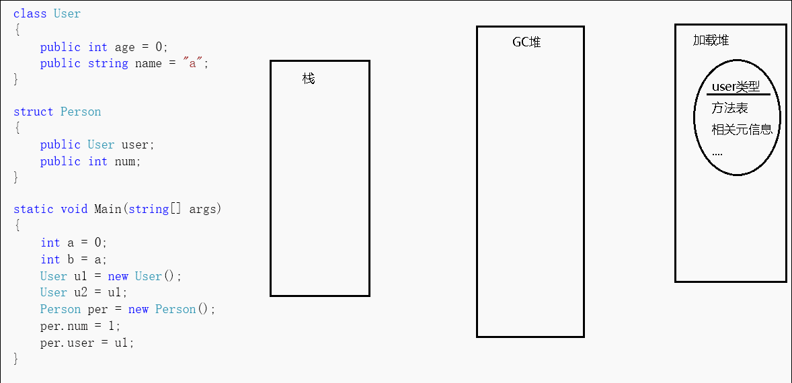
上述gif是我简单画的一个图，可以看到对于方法中申明的值类型变量，其在栈中作为一块值表示，我们可以直接通过c#运算符sizeof来获得值类型所占byte大小。而方法中申明的引用类型变量，其在托管堆中存放着对象实例(对象实例至少会包含上述两个固定成员以及实例数据，可能)，在栈中存放着指向该实例的地址。
当我new一个引用对象的时候，会先分配同步块索引(也叫对象头字节)，然后是类型指针，最后是类型实例数据(静态字段的指针存在于方法表中)。会先分配对象的字段成员，然后分配对象父类的字段成员，接着再执行父类的构造函数，最后才是本对象的构造函数。这个多态的过程，对于CLR来说就是一系列指令的集合，所以不能纠结new一个子类对象是否会也会new一个父类对象这样的问题。而也正是因为引用类型的这样一个特征，我们虽然可以估计一个实例大概占用多少内存，但对于具体占用的大小，我们需要专门的工具来测量。
对于引用类型，u2=u1，我们在赋值的时候，实际上赋的是地址，那么我改动数据实际上是改动该地址指向的数据，这样一来，因为u2和u1都指向同一块区域，所以我对u1的改动会影响到u2，对u2的改动会影响到u1。如果我想互不影响，那么我可以继承IClone接口来实现内存克隆，已有的CLR实现是浅克隆方法，但也只能克隆值类型和String(string是个特殊的引用类型，对于string的更改，其会产生一个新实例对象)，如果对包含其它引用类型的这部分，我们可以自己通过其它手段实现深克隆，如序列化、反射等方式来完成。而如果引用类型中包含有值类型字段，那么该字段仍然分配在堆上。
对于值类型，a=b，我们在赋值的时候，实际上是新建了个值，那么我改动a的值那就只会改动a的值，改动b的值就只会改动b的值。而如果值类型(如struct)中包含的有引用类型，那么仍是同样的规则，引用类型的那部分实例在托管堆中，地址在栈上。
我如果将值类型放到引用类型中(如：object a=3)，会在栈中生成一个地址，在堆中生成该值类型的值对象，还会再生成这类型指针和同步块索引两个字段，这也就是常说装箱，反过来就是拆箱。每一次的这样的操作，都会涉及到内存的分布、拷贝，可见，装箱和拆箱是有性能损耗，因此应该减少值类型和引用类型之间转换的次数。
但对于引用类型间的子类父类的转换，仅是指令的执行消耗，几尽没有开销。
{kind=link}
选class还是struct
那么我到底是该new一个class呢还是选择struct呢？
通过上文知道对于class，用完之后对象仍然存在托管堆，占用内存。对于struct，用完之后直接由操作系统销毁。那么在实际开发中定义类型时，选择class还是struct就需要注意了，要综合应用场景来辨别。struct存在于栈上，栈和托管堆比较，最大的优势就是即用即毁。所以如果我们单纯的传递一个类型，那么选择struct比较合适。但须注意线程堆栈有容量限制，不可多存放超大量的值类型对象，并且因为是值类型直接传递副本，所以struct作为方法参数是线程安全的，但同样要避免装箱的操作。而相比较class，如果类型中还需要多一些封装继承多态的行为，那么class当然是更好的选择。
GC管理器
值得注意的是，当我new完一个对象不再使用的时候，这个对象在堆中所占用的内存如何处理？
在非托管世界中，可以通过代码手动进行释放，但在.NET中，堆完全由CLR托管，也就是说GC堆是如何具体来释放的呢？
当GC堆需要进行清理的时候，GC收集器就会通过一定的算法来清理堆中的对象，并且版本不同算法也不同。最主要的则为Mark-Compact标记-压缩算法。
这个算法的大概含义就是，通过一个图的数据结构来收集对象的根，这个根就是引用地址，可以理解为指向托管堆的这根关系线。当触发这个算法时，会检查图中的每个根是否可达，如果可达就对其标记，然后在堆上找到剩余没有标记(也就是不可达)的对象进行删除，这样，那些不在使用的堆中对象就删除了。
前面说了，因为nextObjPtr的缘故，在堆中分配的对象都是连续分配的，因为未被标记而被删除，那么经过删除后的堆就会显得支零破碎，那么为了避免空间碎片化，所以需要一个操作来让堆中的对象再变得紧凑、连续，而这样一个操作就叫做：Compact压缩。
而对堆中的分散的对象进行挪动后，还会修改这些被挪动对象的指向地址，从而得以正确的访问，最后重新更新一下nextObjPtr指针，周而复始。
而为了优化内存结构，减少在图中搜索的成本，GC机制又为每个托管堆对象定义了一个属性，将每个对象分成了3个等级，这个属性就叫做：代，0代、1代、2代。
每当new一个对象的时候，该对象都会被定义为第0代，当GC开始回收的时候，先从0代回收，在这一次回收动作之后，0代中没有被回收的对象则会被定义成第1代。当回收第1代的时候，第1代中没有被清理掉的对象就会被定义到第2代。
CLR初始化时会为0/1/2这三代选择一个预算的容量。0代通常以256 KB-4 MB之间的预算开始，1代的典型起始预算为512 KB-4 MB，2代不受限制，最大可扩展至操作系统进程的整个内存空间。
比如第0代为256K，第1代为2MB。我们不停的new对象，直到这些对象达到256k的时候，GC会进行一次垃圾回收，假设这次回收中回收了156k的不可达对象，剩余100k的对象没有被回收，那么这100k的对象就被定义为第1代。现在就变成了第0代里面什么都没有，第1代里放的有100k的对象。这样周而复始，GC清除的永远都只有第0代对象，除非当第一代中的对象累积达到了定义的2MB的时候，才会连同清理第1代，然后第1代中活着的部分再升级成第二代…
第二代的容量是没有限制，但是它有动态的阈值(因为等到整个内存空间已满以执行垃圾回收是没有意义的)，当达到第二代的阈值后会触发一次0/1/2代完整的垃圾收集。
也就是说，代数越长说明这个对象经历了回收的次数也就越多，那么也就意味着该对象是不容易被清除的。
这种分代的思想来将对象分割成新老对象，进而配对不同的清除条件，这种巧妙的思想避免了直接清理整个堆的尴尬。
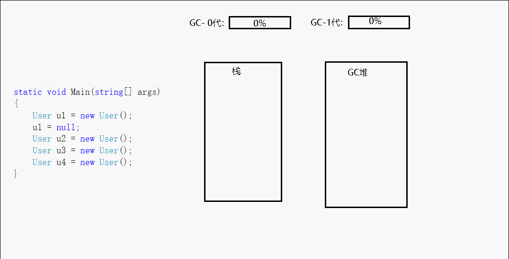
{kind=link}
弱引用、弱事件
GC收集器会在第0代饱和时开始回收托管堆对象，对于那些已经申明或绑定的不经访问的对象或事件，因为不经常访问而且还占内存(有点懒加载的意思)，所以即时对象可达，但我想在GC回收的时候仍然对其回收，当需要用到的时候再创建，这种情况该怎么办？
那么这其中就引入了两个概念：
WeakReference弱引用、WeakEventManager弱事件
对于这两个不区分语言的共同概念，大家可自行扩展百度，此处就不再举例。
GC堆回收
那么除了通过new对象而达到代的阈(临界)值时，还有什么能够导致垃圾堆进行垃圾回收呢？ 还可能windows报告内存不足、CLR卸载AppDomain、CLR关闭等其它特殊情况。
或者，我们还可以自己通过代码调用。
.NET有GC来帮助开发人员管理内存，并且版本也在不断迭代。GC帮我们托管内存，但仍然提供了System.GC类让开发人员能够轻微的协助管理。 这其中有一个可以清理内存的方法(并没有提供清理某个对象的方法)：GC.Collect方法，可以对所有或指定代进行即时垃圾回收(如果想调试，需在release模式下才有效果)。这个方法尽量别用，因为它会扰乱代与代间的秩序，从而让低代的垃圾对象跑到生命周期长的高代中。
GC还提供了，判断当前对象所处代数、判断指定代数经历了多少次垃圾回收、获取已在托管堆中分配的字节数这样的三个方法，我们可以从这3个方法简单的了解托管堆的情况。
托管世界的内存不需要我们打理，我们无法从代码中得知具体的托管对象的大小，你如果想追求对内存最细微的控制，显然C#并不适合你，不过类似于有关内存把控的这部分功能模块，我们可以通过非托管语言来编写，然后通过.NET平台的P/Invoke或COM技术(微软为CLR定义了COM接口并在注册表中注册)来调用。
像FCL中的源码，很多涉及到操作系统的诸如 文件句柄、网络连接等外部extren的底层方法都是非托管语言编写的，对于这些非托管模块所占用的资源，我们可以通过隐式调用析构函数(Finalize)或者显式调用的Dispose方法通过在方法内部写上非托管提供的释放方法来进行释放。
像文中示例的socket就将释放资源的方法写入Dispose中，析构函数和Close方法均调用Dispose方法以此完成释放。事实上，在FCL中的使用了非托管资源的类大多都遵循IDispose模式。而如果你没有释放非托管资源直接退出程序，那么操作系统会帮你释放该程序所占的内存的。
垃圾回收对性能的影响
还有一点，垃圾回收是对性能有影响的。
GC虽然有很多优化策略，但总之，只要当它开始回收垃圾的时候，为了防止线程在CLR检查期间对对象更改状态，所以CLR会暂停进程中的几乎所有线程(所以线程太多也会影响GC时间)，而暂停的时间就是应用程序卡死的时间，为此，对于具体的处理细节，GC提供了2种配置模式让我们选择。
第一种为：单CPU的工作站模式，专为单CPU处理器定做。这种模式会采用一系列策略来尽可能减少GC回收中的暂停时间。
而工作站模式又分为并发(或后台)与不并发两种，并发模式表现为响应时间快速，不并发模式表现为高吞吐量。
第二种为：多CPU的服务器模式，它会为每个CPU都运行一个GC回收线程，通过并行算法来使线程能真正同时工作，从而获得性能的提升。
我们可以通过在Config文件中更改配置来修改GC模式，如果没有进行配置，那么应用程序总是默认为单CPU的工作站的并发模式，并且如果机器为单CPU的话，那么配置服务器模式则无效。
如果在工作站模式中想禁用并发模式，则应该在config中运行时节点添加 <gcConcurrent enabled="false" />
如果想更改至服务器模式，则可以添加 <gcServer enabled="true" />。
1 | <configuration> |
gcConcurrent: https://docs.microsoft.com/zh-cn/dotnet/framework/configure-apps/file-schema/runtime/gcconcurrent-element
gcServer: https://docs.microsoft.com/zh-cn/dotnet/framework/configure-apps/file-schema/runtime/gcserver-element
性能建议
虽然我们可以选择适合的GC工作模式来改善垃圾回收时的表现，但在实际开发中我们更应该注意减少不必要的内存开销。
几个建议是，减换需要创建大量的临时变量的模式、考虑对象池、大对象使用懒加载、对固定容量的集合指定长度、注意字符串操作、注意高频率的隐式装箱操作、延迟查询、对于不需要面向对象特性的类用static、需要高性能操作的算法改用外部组件实现(p/invoke、com)、减少throw次数、注意匿名函数捕获的外部对象将延长生命周期、可以阅读GC相关运行时配置在高并发场景注意变换GC模式…
对于.NET中改善性能可延伸阅读 https://msdn.microsoft.com/zh-cn/library/ms973838.aspx 、 https://msdn.microsoft.com/library/ms973839.aspx
.NET程序执行图
至此，.NET Framework上的三个重要概念，程序集、应用程序域、内存在本文讲的差不多了，我画了一张图简单的概述.NET程序的一个执行流程：
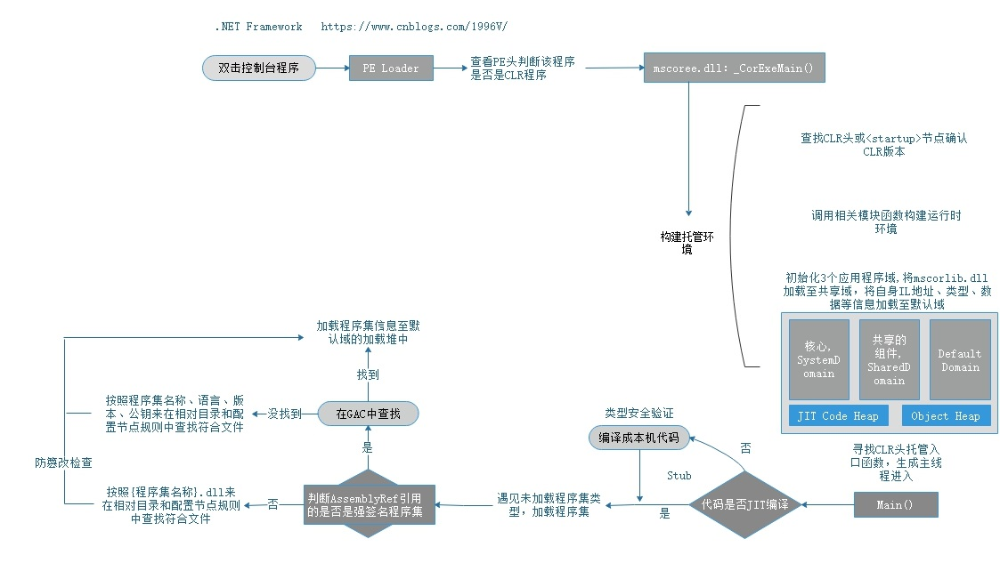
对于后文，我将单独的介绍一些其它杂项，首先是.NET平台的安全性。
{kind=link}
.NET的安全性
.NET Framework中的安全机制分为 基于角色的安全机制 和 代码访问安全机制。
基于角色的安全性
基于角色的安全机制作为传统的访问控制，其运用的非常广泛，如操作系统的安全策略、数据库的安全策略等等…它的概念就相当于我们经常做的那些RBAC权限管理系统一样，用户关联角色，角色关联权限，权限对应着操作。
整个机制的安全逻辑就和我们平时编写代码判断是一样的，大致可以分为两个步骤。
第一步就是创建一个主体，然后标识这个主体是什么身份(角色) ，第二步就是 身份验证，也就是if判断该身份是否可以这样操作。
而在.NET Framework中，这主体可以是Windows账户，也可以是自定义的标识，通过生成如当前线程或应用程序域使用的主体相关的信息来支持授权。
比如，构造一个代表当前登录账户的主体对象WindowsPrincipal，然后通过AppDomain.CurrentDomain.SetThreadPrincipal(主体对象);或Thread.CurrentPrincipal的set方法来设置应用程序域或线程的主体对象， 最后使用System.Security.Permissions.PrincipalPermission特性来标记在方法上来进行授权验证。
{kind=link}
{kind=link}
如图，我当前登录账号名称为DemoXiaoZeng，然后通过Thread.CurrentPrincipal设置当前主体，执行aa方法，顺利打印111。如果检测到PrincipalPermission类中的Name属性值不是当前登录账号，那么就报错：对主体权限请求失败。
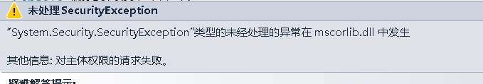
在官方文档中有对.NET Framework基于角色的安全性的详细的介绍，感兴趣可以去了解 https://docs.microsoft.com/zh-cn/dotnet/standard/security/principal-and-identity-objects#principal-objects
{kind=link}
代码访问安全性
在.NET Framework中还有一个安全策略，叫做 代码访问安全Code Access Security，也就是CAS了。
代码访问安全性在.NET Framework中是用来帮助限制代码对受保护资源和操作的访问权限。
举个例子，我通过创建一个FileIOPermission对象来限制对后续代码对D盘的文件和目录的访问，如果后续代码对D盘进行资源操作则报错。
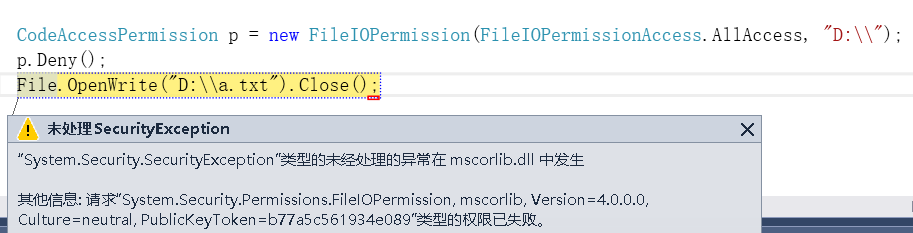
FileIOPermission是代码控制访问文件和文件夹的能力。除了FileIOPermission外，还有如PrintingPermission代码控制访问打印机的权限、RegistryPermission代码控制操作注册表的权限、SocketPermission控制接受连接或启动Socket连接的权限。
对于这些通过代码来对受保护资源和操作的权限限制，也就是这些类名后缀为Permission的类，它们叫做 Permissions(权限)，都继承自CodeAccessPermission，都有如Demand，Assert，Deny，PermitOnly，IsSubsetOf，Intersect和Union这些方法，在MSDN上有完整的权限列表：https://msdn.microsoft.com/en-us/library/h846e9b3(v=vs.100).aspx
为了确定代码是否有权访问某一资源或执行某一操作，CLR的安全系统将审核调用堆栈，以将每个调用方获得的权限与要求的权限进行比较。 如果调用堆栈中的任何调用方不具备要求的权限，则会引发安全性异常并拒绝访问。
图出自 https://docs.microsoft.com/zh-cn/dotnet/framework/misc/code-access-security
而除了Permissions权限，代码访问安全性机制还有 权限集、证据、代码组、策略等概念。这些概念让CAS如此强大，但相应的，它们也让CAS变得复杂，必须为每个特定机器定义正确的PermissionSet和Code Groups才能设置成一个成功的CAS策略。
考虑到这层原因，Microsoft .NET安全小组决定从头开始重建代码访问安全性。在.NET Framework4.0之后，就不再使用之前的那套CAS模型了，而是使用.NET Framework 2.0中引入的安全透明模型，然后稍加修改，修改后的安全透明模型成为保护资源的标准方法，被称之为：安全透明度级别2
安全透明度2介绍：https://msdn.microsoft.com/en-us/library/dd233102(v=vs.100).aspx
.NET Framework4.0的安全更改：https://msdn.microsoft.com/en-us/library/dd233103(v=vs.100).aspx
一个完整的CAS演示：https://www.codeproject.com/Articles/5724/Understanding-NET-Code-Access-Security
对于安全透明度级别2我将不再介绍，感兴趣的可以看我推荐的这2篇文章，对Level2的安全透明度介绍的比较详细，包括实践、迁移。
https://www.red-gate.com/simple-talk/dotnet/.net-framework/whats-new-in-code-access-security-in-.net-framework-4.0---part-i/
https://www.red-gate.com/simple-talk/dotnet/net-framework/whats-new-in-code-access-security-in-net-framework-4-0-part-2/
{kind=link}
须注意：
.NET平台上的安全机制，仅仅是.NET平台上的，因此它只限制于托管代码，我们可以直接调用非托管代码或进程通信间接调用非托管代码等多个手段来突破对托管代码 操作资源的限制。
事实上，我们在平常项目中代码编写的安全机制(业务逻辑身份验证、项目框架验证)与这些平台级的安全机制没什么不同。我们可以理解为代码写的位置不一样，.NET安全机制是写在CLR组件中，而我们的安全机制是写在上层的代码中。这些平台级的标识更多的是和操作系统用户有关，而我们项目代码中的标识则是和在数据库中注册的用户有关， 大家都是通过if else来去判断，判断的主体和格局不一样，逻辑本质都是相同的。
NET Core不支持代码访问安全性和安全性透明性。
.NET是什么
我在前文对.NET系统概述时，有的直接称.NET，有的称.NET Framework。那么准确来说什么是.NET?什么又是.NET Framework呢？
.NET是一个微软搭造的开发者平台，它主要包括：
- 1.支持(面向)该平台的编程语言(如C#、Visual Basic、C++/CLI、F#、IronPython、IronRuby…)，
- 2.用于该平台下开发人员的技术框架体系(.NET Framework、.NET Core、Mono、UWP等)，
- 1.定义了通用类型系统，庞大的CTS体系
- 2.用于支撑.NET下的语言运行时的环境：CLR
- 3..NET体系技术的框架库FCL
- 3.用于支持开发人员开发的软件工具(即SDK，如VS2017、VS Code等)
.NET Framework是什么
事实上，像我上面讲的那些诸如程序集、GC、AppDomain这样的为CLR的一些概念组成，实质上指的是.NET Framework CLR。
.NET平台是微软为了占据开发市场而成立的，不是无利益驱动的纯技术平台的那种东西。基于该平台下的技术框架也因为 商业间的利益 从而和微软自身的Windows操作系统所绑定。所以虽然平台雄心和口号很大，但很多框架类库技术都是以Windows系统为蓝本，这样就导致，虽然.NET各方面都挺好，但是用.NET就必须用微软的东西，直接形成了技术-商业的绑定。
.NET Framework就是.NET 技术框架组成在Windows系统下的具体的实现，和Windows系统高度耦合，上文介绍的.NET系统，就是指.NET Framework。
部署.net Framework ：https://docs.microsoft.com/zh-cn/dotnet/framework/deployment/deployment-guide-for-developers
.NET Framework高级开发：https://docs.microsoft.com/en-us/previous-versions/visualstudio/visual-studio-2008/29eafad8(v%3dvs.90)
.NET Framework源码在线浏览：https://referencesource.microsoft.com/
如何在VS中调试.NET Framework源代码
最为关键的是pdb符号文件，没得符号就调不了，对于符号我们从微软的符号服务器上下载(默认就已配置)，还得有源代码来调试。
点击工具-选项-调试-常规，如果你之前没有在该配置栏配置过，那么你就勾选 启用源服务器支持 、启用.net Framework源代码单步执行，然后将 要求源文件与原始版本完全匹配 给取消掉。
然后就是下载pdb符号文件了，如果想直接下载那么可以在调试-符号这栏 将Microsoft符号服务器给勾上 。如果想按需下载，那么在调试的时候，可以点击调试-窗口 选择 模块/调用堆栈 来选择自己想加载的去加载。
然后至 https://referencesource.microsoft.com/ 网站 点击右上角下载源代码。当你调试代码的时候，会提示你无可用源，这个时候你再将你下载下来的源码文件给浏览查找一下就可以了。
如何配置VS来调试.NET Framework源码： https://referencesource.microsoft.com/#q=web 、 https://technet.microsoft.com/zh-cn/cc667410.aspx
还一种方法是，下载.NET Reflector插件，该插件可以帮助我们在VS中直接调试dll，这种方式操作非常简单，不过该插件收费，具体的可以查看我之前写过的文章(群里有该插件的注册版)
.NET Core是什么
有丑才有美，有低才有高，概念是比较中诞生的。.NET Core就是如此，它是其它操作系统的.NET Framework翻版实现。
操作系统不止Windows，还有Mac和类Linux等系统， .NET的实现 如果按操作系统来横向分割的话，可以分为 Windows系统下的 .NET Framework 和 兼容多个操作系统的 .NET Core。
我们知道，一个.NET程序运行核心在于.NET CLR，为了能让.NET程序在其它平台上运行，一些非官方社区和组织为此开发了在其它平台下的.NET实现（最为代表的是mono，其团队后来又被微软给合并了 ），但因为不是官方，所以在一些方面多少有些缺陷(如FCL)，后来微软官方推出了.NET Core，其开源在Github中，并被收录在NET基金会(.NET Foundation，由微软公司成立与赞助的独立自由软件组织，其目前收录包括.NET编译器平台(“Roslyn”)以及ASP.NET项目系列，.NET Core，Xamarin Forms以及其它流行的.NET开源框架)，旨在真正的 .NET跨平台。
.NET Core是.NET 技术框架组成在Windows.macOS.Linux系统下的具体的实现。
.NET Core是一个开源的项目，其由 Microsoft 和 GitHub 上的 .NET 社区共同维护，但 这份工作仍然是巨大的，因为在早期对.NET上的定义及最初的实现一直是以Windows系统为参照及载体，一些.NET机制实际上与Windows系统耦合度非常高，有些属于.NET自己体系内的概念，有些则属于Windows系统api的封装。 那么从Windows转到其它平台上，不仅要实现相应的CLR，还要舍弃或重写一部分BCL，因而，.NET Core在概念和在项目中的行为与我们平常有些不同。
比如，NET Core不支持AppDomains、远程处理、代码访问安全性 (CAS) 和安全透明度，任何有关该概念的库代码都应该被替换。
这部分代码它不仅指你项目中的代码，还指你项目中using的那些程序集代码，所以你会在github上看到很多开源项目都在跟进对.NET Core的支持,并且很多开发者也尝试学习.NET Core，这也是一种趋势。
.NET Core指南https://docs.microsoft.com/en-us/dotnet/core/
.NET基金会：https://dotnetfoundation.org
.NET Core跨平台的行为变更：https://github.com/dotnet/corefx/wiki/ApiCompat
微软宣布.NET开发环境将开源 ：https://news.cnblogs.com/n/508410/
.NET Standard是什么
值得一提的是微软还为BCL提出了一个标准，毕竟各式各样的平台，技术层出不穷，为了防止.NET在类库方面的碎片化，即提出了一套正式的 .NET API (.NET 的应用程序编程接口)规范，.NET Standard。
正如上面CLS一样，.NET Standard就类似于这样的一个概念，无论是哪个托管框架，我们遵循这个标准，就能始终保持在BCL的统一性，即我不需要关心我是用的.NET Framework还是.NET Core，只要该类被定义于.NET Standard中，我就一定能在对应支持的.NET Standard的版本的托管框架中找到它。
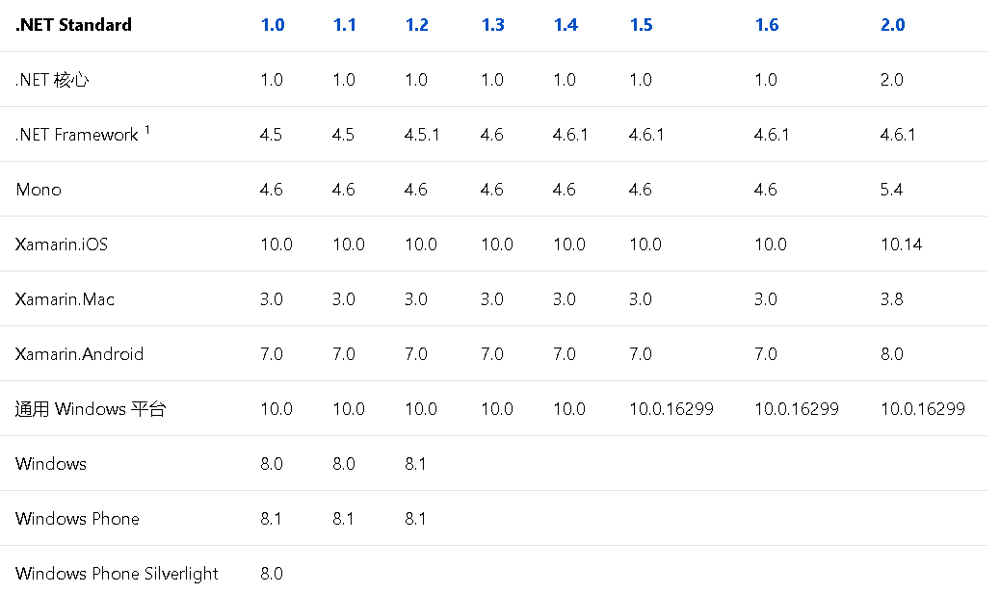
.NET Standard： https://docs.microsoft.com/zh-cn/dotnet/standard/net-standard#net-implementation-support
.NET Standard开源代码：https://github.com/dotnet/standard
{kind=link}
.NET官方开源项目链接
现在我将给出.NET相关的开源项目地址：
参与.NET和.NET开源项目的起点：https://github.com/Microsoft/dotnet
- .NET Core：https://github.com/dotnet/core
- .NET Core文档：https://github.com/dotnet/docs
- ASP.NET Core：https://github.com/aspnet/home
- ASP.NET Core文档：https://github.com/aspnet/Docs
- EntityFramework Core框架:https://github.com/aspnet/EntityFrameworkCore
- ASP.NET Core MVC框架：https://github.com/aspnet/Mvc
- EntityFramework6:https://github.com/aspnet/EntityFramework6
- .NET Framework源码：https://github.com/microsoft/referencesource
- .NET Core基类库：https://github.com/dotnet/corefx
- .NET Core CLR：https://github.com/dotnet/coreclr
- Roslyn编译器：https://github.com/dotnet/roslyn
- MVC5、Web API2、Web Pages3框架源码：https://github.com/aspnet/AspNetWebStack
- .NET Standard：https://github.com/dotnet/standard
- KestrelHttpServer用于ASP.NET Core的跨平台Web服务器：https://github.com/aspnet/KestrelHttpServer
- Visual Studio Code源码：https://github.com/Microsoft/vscode
- 一些优秀的.NET库、工具、框架、软件开源集合：https://github.com/quozd/awesome-dotnet
- 一些常用框架对ASP.NET Core和.NET Core的支持报告：https://github.com/jpsingleton/ANCLAFS
- 一些.NET下用于支持开发的开源项目集合：https://github.com/Microsoft/dotnet/blob/master/dotnet-developer-projects.md
- 微软出品的分布式框架orleans：https://github.com/dotnet/orleans
- ML.NET 用于.NET的开源和跨平台机器学习框架：https://github.com/dotnet/machinelearning
Visual Studio
在文章最后，我还要简单的说下Visual Studio。
通过上文得知，只需要一个txt记事本+csc.exe我们就可以开发出一个.NET程序，那么与之相比，.NET提供的开发工具VS有什么不同呢？
我们用记事本+csc.exe来编写一个.NET程序只适合小打小闹，对于真正要开发一个项目而言，我们需要文件管理、版本管理、一个好的开发环境等。而vs ide则就是这样一个集成代码编辑、编译、调试、追踪、测试、部署、协作、插件扩展这样多个组件的集成开发环境，csc.exe的编译功能只是vs ide中的其中之一。使用vside开发可以节省大量的开发时间和成本。
sln解决方案
当你用VS来新建一个项目时，VS会先为你新建一个整体的解决方案。这个解决方案表现为.sln和.suo后缀格式的文件，它们均是文本文件，对解决方案右键属性可以进行相应的修改，也可以直接用记事本打开。
在sln中，定义了解决方案的版本及环境，如包含的项目，方案启动项，生成或部署的一些项目配置等，你可以通过修改或重新定义sln来更改你的整个解决方案。
而suo则包含于解决方案建立关联的选项，相当于快照，储存了用户界面的自定义配置、调试器断点、观察窗口设置等这样的东西，它是隐藏文件，可删除但建议不要删除。
我们可以通过对比各版本之间的sln来修改sln,也可以使用网上的一些转换工具，也可以直接点击VS的文件-新建-从现有代码创建项目来让项目在不同VS版本间切换。
Visual Studio 2010 - # Visual Studio 4.0
Visual Studio 2012 - # Visual Studio 4.0
Visual Studio 2013 - # Visual Studio 12.00
Visual Studio 2015 - # Visual Studio 14
Visual Studio 2017 - # Visual Studio 15
项目模板
VS使用项目模板来基于用户的选择而创建新的项目，也就是新建项目中的那些展示项(如mvc5项目/winform项目等等)，具体表现为包含.vstemplate及一些定义的关联文件这样的母版文件。将这些文件压缩为一个 .zip 文件并放在正确的文件夹中时，就会在展示项中予以显示。
用户可以创建或自定义项目模板，也可以选择现有的模板，比如我创建一个控制台项目就会生成一个在.vstemplate中定义好的Program.cs、AssemblyInfo.cs(程序集级别的特性)、App.config、ico、csproj文件
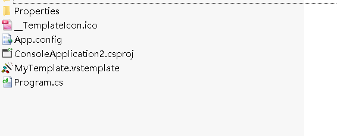
{kind=link}
csproj工程文件
这里面，csproj是我们最常见的核心文件，CSharp Project，它是用于构建这个项目的工程文件。
csproj是基于xml格式的MSBuild项目文件，其仍然是文本文件，可以打开并修改定义了的工程构造的属性，比如选择性的添加或删除或修改包含在项目中的文件或引用、修改项目版本、将其转换为其它类型项目等。
MSBuild是微软定义的一个用于生成应用程序的平台(Microsoft Build Engine)，在这里为VS提供了项目的构造系统，在微软官方文档上有着详细的说明：https://msdn.microsoft.com/zh-cn/library/dd393573.aspx、https://docs.microsoft.com/zh-cn/visualstudio/msbuild/msbuild
项目属性杂项
现在，简单说明一下csproj文件的一些核心元素。我们用vs新建一个控制台项目，然后对项目右键属性打开项目属性，在应用程序页我们可以定义：程序集名称(生成出来的程序集以程序集名称作为文件名，相当于csc中的/out)、默认命名空间(每次新建类里面显示的命名空间)、目标框架、应用程序类型、程序集信息(AssemblyInfo中的信息)、启动对象(可同时存在多个Main方法，需指定其中一个为入口对象)、程序集资源(一些可选的图标及文件)
在生成页有：
- 条件编译符号(全局的预编译#define指令，不用在每个文件头部定义，相当于csc中的/define)
- 定义DEBUG/TRACE常量(用于调试输出的定义变量，如智能追踪的时候可以输出该变量)
- 目标平台(指定当前面向什么处理器生成的程序集，相当于csc中的/platform。选择x86则生成的程序集生成32位程序，能在32/64位Intel处理器中使用。选择x64则生成64位，只能在64位系统中运行。选择Any CPU则32位系统生成32位，64位系统则生成64位。注意：编译平台和目标调用平台必须保持一致，否则报错。生成的32位程序集不能调用64位程序集，64位也不能调用32位)、首选32位(如果目标平台是Any CPU并且项目是应用程序类型，则生成的是32位程序集)
- 允许不安全代码(unsafe开关，在c#中进行指针编程，如调换a方法和b方法的地址)
- 优化代码(相当于csc中的/optimize，优化IL代码让调试难以进行，优化JIT代码)
- 输出路径(程序集输出目录，可选择填写相对路径目录或绝对路径目录)
- XML文档文件(相当于csc中的/doc，为程序集生成文档注释文件，浏览对方程序集对象就可以看到相关注释，VS的智能提示技术就运用于此)
- 为COM互操作注册(指示托管应用程序将公开一个 COM 对象,使COM对象可以与托管应用程序进行交互)
在高级生成设置中有:语言版本(可以选择C#版本)、调试信息(相当于csc中的/debug。选择none则不生成任何调试信息，无法调试。选择full则允许将调试器附加到运行程序，生成pdb调试文件。选择pdb-only，自.NET2.0开始与full选项完全相同，生成相同的pdb调试文件。)、文件对齐(指定输出文件中节的大小)、DLL基址(起点地址)
在生成事件选项中可以设置生成前和生产后执行的命令行，我们可以执行一些命令。
在调试选项中有一栏叫：启用Visual Studio承载进程，通过在vshost.exe中加载运行项目程序集，这个选项可以增加程序的调试性能，启用后会自动在输出目录生成{程序集名称}.vshost.exe这样一个文件，只有当当前项目不是启动项目的时候才能删除该文件。
IntelliTrace智能追溯
还要介绍一点VS的是，其IntelliTrace智能追溯功能，该功能最早存在于VS2010旗舰版，是我用的最舒服的一个功能。
简单介绍，该功能是用来辅助调试的，在调试时可以让开发人员了解并追溯代码所产生的一些事件，并且能够进行回溯以查看应用程序中发生的情形，它是一个非常强大的调试追踪器，它可以捕捉由你代码产生的事件，如异常事件、函数调用(从入口)、ADO.NET的命令(Sql查询语句…)、ASP.NET相关事件、代码发送的HTTP请求、程序集加载卸载事件、文件访问打开关闭事件、Winform/Webform/WPF动作事件、线程事件、环境变量、Console/Trace等输出…
我们可以通过在调试状态下点击调试菜单-窗口-显示诊断工具，或者直接按Ctrl+Alt+F2来唤起该功能窗口。
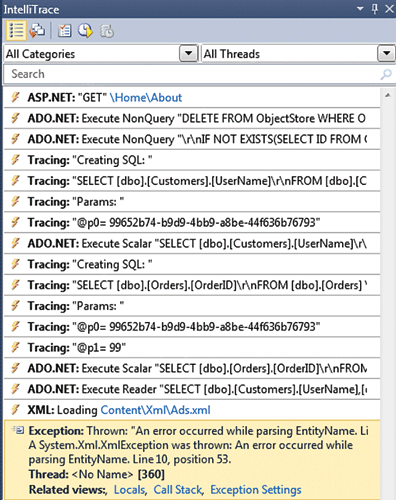
当然，VS还有其它强大的功能，我建议大家依次点完 菜单项中的 调试、体系结构、分析这三个大菜单里面的所有项，你会发现VS真是一个强大的IDE。比较实用且方便的功能举几个例子：
比如 从代码生成的序列图，该功能在vs2015之前的版本可以找到(https://msdn.microsoft.com/en-us/library/dd409377.aspx 、https://www.zhihu.com/question/36413876)
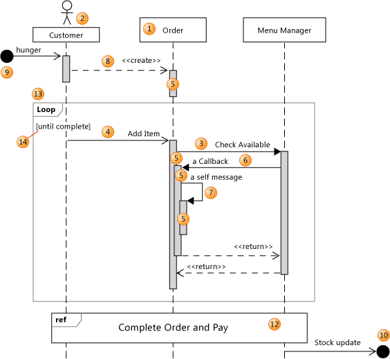
比如 模块关系的代码图，可以看到各模块间的关系
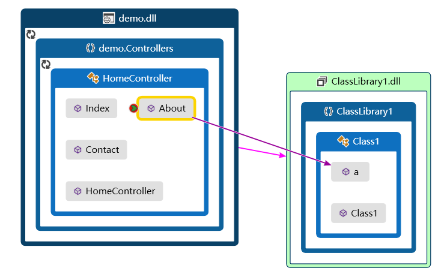
比如 对解决方案的代码度量分析结果
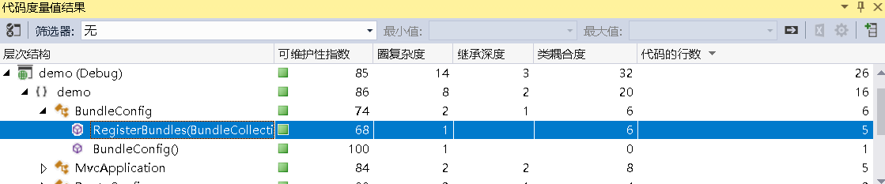
比如 调试状态下 函数调用的 代码图，我们可以看到MVC框架的函数管道模型
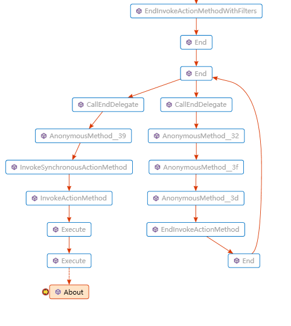
以及并行堆栈情况、加载的模块、线程的实际情况
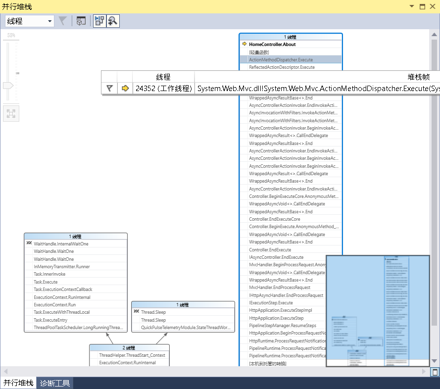
{kind=link}
{kind=link}
{kind=link}
{kind=link}
{kind=link}
{kind=link}
{kind=link}
{kind=link}
还有如进程、内存、反汇编、寄存器等的功能，这里不再一一展示
链接
有关解决方案：https://msdn.microsoft.com/zh-cn/library/b142f8e7(v=vs.110).aspx
有关项目模板： https://msdn.microsoft.com/zh-cn/library/ms247121(v=vs.110).aspx
有关项目元素的说明介绍：https://docs.microsoft.com/zh-cn/previous-versions/visualstudio/visual-studio-2010/16satcwx(v%3dvs.100)
有关调试更多内容：https://docs.microsoft.com/zh-cn/visualstudio/debugger/
有关代码设计建议：https://docs.microsoft.com/zh-cn/visualstudio/code-quality/code-analysis-for-managed-code-warnings
有关IntelliTrace介绍：https://docs.microsoft.com/zh-cn/previous-versions/visualstudio/visual-studio-2010/dd264915(v%3dvs.100)
建议
我热爱编程。
我知道大多数人对技术的积累都是来自于平常工作中，工作中用到的就去学，用不到就不学，学一年的知识，然后用个五六年。
我也能理解人的理想和追求不同，有的人可能就想平淡点生活。有的人可能是过了拼劲，习惯了安逸。有的人已经认命了。
而我现在也每天饱满工作没多少时间，但在下班之余我仍然坚持每天都看一看书。
想学没时间学，想拼不知道往哪拼。有埋汰自己脑袋笨的，有说自己不感兴趣的。有明明踌躇满志，但总三天捕鱼两天晒网的。我身边的朋友大多都这样。
我想说，尽管我们每个人的境遇、思想、规划不同，但我肯定大家大部分是出于生计而工作。
而出于生计，那就是为了自己。而既然是为了自己，那就别每天浑浑噩噩过，即使你因各种原因而没有斗志。
编程来不得虚的，如果你没走上管理，那么你的技术好就是好，不好就是不好，混不得，一分技术一分钱。自己不扎实，你运气就不可能太好。
技术是相通的，操作系统、通信、数据结构、协议标准、技术规范、设计模式，语言只是门工具。要知其然也要知其所以然，只知道1个梨+1个梨=2个梨，不知道1个苹果+1个苹果等于啥就悲剧了。
那怎样提升自己？肯定不能像之前那样被动的去学习了。
光靠工作中的积累带来的提升是没有多少。你不能靠1年的技术重复3年的劳动，自己不想提升就不能怨天尤人。
上班大家都一样，我认为成功与否取决于你的业余时间。你每天下班无论再苦都要花一个小时来学习，学什么都行，肯定能改变你的人生轨迹。
比如你每天下班后都用一小时来学一个概念或技术点，那么300天就是300个概念或者技术点，这是何等的恐怖。
当然，这里的学要有点小方法小技巧的。不能太一条道摸到黑的那种，虽然这样最终也能成功，并且印象还深刻，但是总归效率是有点低的。
比如你从网上下载个项目源码，你项目结构不知道，该项目运用技术栈也不太了解，就一点一点的开始解读。这是个提升的好方法，但这样很累，可以成功，但是很慢。见的多懂的少，往往会因为一个概念上的缺失而在一个细小的问题上浪费很长时间。或者说一直漫无目的的看博客来了解技术，那样获取的知识也不系统。
我的建议是读书，书分两类，一类是 讲底层概念的 一类是 讲上层技术实现的。
可以先从上层技术实现的书读起(如何连接数据库、如何写网页、如何写窗体这些)。在有一定编程经验后就从底层概念的书开始读，操作系统的、通信的、数据库的、.NET相关组成的这些…
读完之后再回过头读这些上层技术的书就会看的更明白更透彻，最后再琢磨git下来的项目就显得轻松了。
就.NET CLR组成这一块中文书籍比较少，由浅到深推荐的书有 你必须知道的.NET(挺通俗)，CLR C#(挺通俗，进阶必看)，如果你想进一步了解CLR，可以看看园子里 包建强 http://www.cnblogs.com/Jax/archive/2009/05/25/1488835.html 和中道学友 http://www.cnblogs.com/awpatp/archive/2009/11/11/1601397.html 翻译的书籍及文章，当然如果你英语合格的话也可以直接阅读他们翻译的来源书籍，我这里有Expert .NET 2.0 IL Assembler的机器翻译版，同时我也建议从调试的方面入手，如 NET高级调试(好多.NET文件调试、反编译的文章都是参考这本书和Apress.Expert.dot.NET.2.0.IL.Assembler(这本书我有机器翻译版)的内容)或者看看Java的JVM的文章。
欢迎加群和我交流(书籍我都放在群文件里了)
现在技术发展很快，我建议大家有基础的可以直接看官方文档，(详细链接我已经在各小节给出)以下是部分常用总链接：
asp.net指南：https://docs.microsoft.com/zh-cn/aspnet/#pivot=core
Visual Studio IDE 指南：https://docs.microsoft.com/zh-cn/visualstudio/ide/
C# 指南： https://docs.microsoft.com/zh-cn/dotnet/csharp/
.NET指南：https://docs.microsoft.com/zh-cn/dotnet/standard/
微软开发文档：https://docs.microsoft.com/zh-cn/
最后送给大家我经常做的两句话：
- 先问是不是，再问怎样做，最后我一定会问 为什么
- 没人比谁差多少，相信自己，坚持不断努力，你也能成功